MyBox User Guide – Data Tools v6.6
MyBox: Easy Tools Set
User Guide – Data Tools
Author: Mara
Version: 6.6
Date: 2022-9-28
Contents
1 Introduction 6
1.1 Main Interface 6
1.2 Resources Addresses 7
1.3 Documents 8
1.4 Menu of Tools 8
2 Data in Two-dimensional Storage Structure 9
2.1 Data Objects 9
2.2 Functions Menu 10
2.3 Edit Data 11
2.3.1 Save and Recover 11
2.3.2 Define Columns 12
2.3.3 Define Data Attributes 14
2.3.4 Edit Mode "Table" 15
2.3.5 Edit Mode "Text" 16
2.3.6 View Html 17
2.3.7 View Text 17
2.3.8 Load Contents in System Clipboard 18
2.3.9 Import Examples 19
2.3.9.1 Statistic Data of China 19
2.3.9.2 Data of Regression 20
2.4 Row Expression 21
2.5 Row Filter 23
2.6 Modify 24
2.6.1 Set Values 25
2.6.2 Delete 26
2.6.3 Set styles / Mark Abnormal Values 27
2.6.3.1 Manage Styles 27
2.6.3.2 Data Scope 28
2.6.3.3 Define Styles 29
2.6.3.4 Apply Styles 29
2.6.4 Paste Content in System Clipboard 30
2.6.5 Paste Content in MyBox Clipboard 30
2.7 Trim 31
2.7.1 Copy/Filter/Query 32
2.7.2 Sort 33
2.7.3 Transpose 34
2.7.4 Normalization 35
2.7.5 Split 36
2.8 Calculation 37
2.8.1 Row Expression 38
2.8.2 Descriptive Statistic 39
2.8.3 Group Equal Values 40
2.8.4 Simple Linear Regression 43
2.8.4.1 Regression 43
2.8.4.2 Model 44
2.8.4.3 Fitted Chart 45
2.8.4.4 Residual Chart 46
2.8.5 Simple Linear Regression - Combination 47
2.8.6 Multiple Linear Regression 48
2.8.6.1 Regression 48
2.8.6.2 Model 49
2.8.7 Multiple Linear Regression - Combination 50
2.8.8 Frequency Distributions 51
2.8.9 Values Percentage 52
2.9 Chart 53
2.9.1 XY Chart 54
2.9.1.1 Data 54
2.9.1.2 Bar Chart 54
2.9.1.3 Stacked Bar Chart 55
2.9.1.4 Line Chart 55
2.9.1.5 Scatter Chart 56
2.9.1.6 Bubble Chart 56
2.9.1.7 Area Chart 57
2.9.1.8 Stacked Area Chart 58
2.9.1.9 Parameters of Data in Chart 59
2.9.1.10 Layout 60
2.9.1.11 Category Axis 61
2.9.1.12 Number Axis 62
2.9.2 Pie Chart 63
2.9.3 Box-and-whisker Chart 64
2.9.4 Self Comparison Bars Chart 66
2.9.5 Comparison Bars Chart 68
2.9.6 XYZ Chart 70
2.9.6.1 3-D Scatter 70
2.9.6.2 Surface Chart 72
2.10 Outputs 74
2.10.1 Export 75
2.10.2 Convert to Database Table 76
2.11 Manage Data 77
2.12 Splice Data 78
2.13 Data File 79
2.13.1 CSV File 79
2.13.2 Text File 80
2.13.3 Excel File 81
2.13.4 Convert/Split Data Files in Batch 82
2.13.5 Merge Data Files 83
2.14 Data in System Clipboard 84
2.15 Data in MyBox Clipboard 85
2.16 Matrix 86
2.16.1 Edit and Manage Matrices 86
2.16.2 Unary Matrix Calculation 87
2.16.3 Binary Matrices Calculation 88
2.17 Database Tables 89
2.17.1 Manage Database Tables 89
2.17.2 Limitations of SQL Identifier 90
2.17.3 Database SQL 91
2.17.4 SQL Query 92
3 Script and Expression 93
3.1 JShell(Java interactive coding tool) 93
3.2 JEXL(Java Expression Language) 95
3.3 Javascript 97
4 Math Function 98
4.1 Define Math Functions 98
4.2 Calculate Math Function 98
4.3 Data Set 100
4.4 XY Chart of Unary Function 101
4.5 XYZ Chart of Binary Function 102
5 Data of Location 103
5.1 Data Constraints 103
5.1.1 Invalid Value 103
5.1.2 Coordinate System: 103
5.1.3 Coordinate Values 103
5.1.4 Time 103
5.1.4.1 Date Formats 103
5.1.4.2 Era 103
5.1.4.3 Examples 104
5.2 Data Operations 104
5.3 Map Data 105
5.4 Geography Code 107
5.4.1 Data Definition 107
5.4.2 Data Constraints 107
5.4.3 Edit Data 107
5.4.4 Define Condition 107
5.4.5 Import Data 107
5.4.5.1 Predefined Data 107
5.4.5.2 CSV Format 108
5.4.5.3 Data from geoname.org: 108
5.4.6 Settings 108
5.5 Location in Map 110
5.6 Location Data 111
5.6.1 Data Definition 111
5.6.2 Data constraints 111
5.6.3 Define Conditions 111
5.6.4 Map Data 111
5.6.5 Snapshots 112
5.6.6 Import Data 112
5.6.6.1 CSV Format 112
5.6.6.2 Data from movebank.org 112
5.6.6.3 Examples 112
5.7 Location Tools 114
5.8 Epidemic Reports 115
5.8.1 Data Definition 115
5.8.2 Data Constraints 116
5.8.3 Edit Data 116
5.8.4 Import Data 116
5.8.4.1 Predefined Data 116
5.8.4.2 CSV format: 116
5.8.4.3 COVID-19 historical data from Johns Hopkins University(Global) : 116
5.8.4.4 COVID-19 daily data from Johns Hopkins University(Global) : 117
5.8.4.5 Handle Data of Imported 117
5.8.5 Statistics Data 117
5.8.6 Define Conditions 117
5.8.7 Display Charts 118
5.8.8 Settings 118
6 Others 119
6.1 Create Barcodes 119
6.2 Decode Barcodes 119
6.3 Message Digest 120
6.4 Encode/Decode Base64 120
6.5 Extract ttf files from ttc file 120
This is desktop application based on JavaFx to provide simple and easy functions. It's free and open sources.
|
Contents |
Link |
|---|---|
|
Project Main Page |
|
|
Source Codes and Compiled Packages |
|
|
Submit Software Requirements and Problem Reports |
|
|
Data |
|
|
Documents |
|
|
Mirror Site |
|
|
Cloud Storage |
https://pan.baidu.com/s/1fWMRzym_jh075OCX0D8y8A#list/path=%2F |
|
Name |
Version |
Time |
English |
Chinese |
|---|---|---|---|---|
|
Development Logs |
6.6 |
2022-9-28 |
||
|
Shortcuts |
6.5.6 |
2022-6-11 |
||
|
Packing Steps |
6.3.3 |
2020-9-27 |
||
|
Development Guide |
2.1 |
2020-8-27 |
||
|
User Guide - Overview |
6.6 |
2022-9-28 |
||
|
User Guide - Document Tools |
6.6 |
2022-9-28 |
||
|
User Guide - Image Tools |
6.6 |
2022-9-28 |
||
|
User Guide - File Tools |
6.6 |
2022-9-28 |
||
|
User Guide - Network Tools |
6.6 |
2022-9-28 |
||
|
User Guide - Data Tools |
6.6 |
2022-9-28 |
||
|
User Guide - Media Tools |
6.6 |
2022-9-28 |
||
|
User Guide - Development Tools |
6.6 |
2022-9-28 |
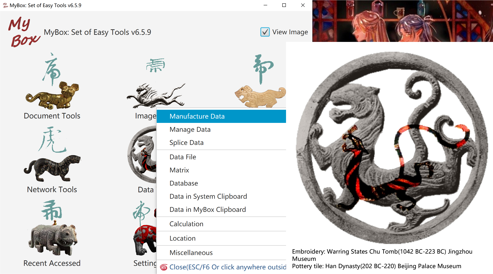
Following objects can be edited in consistent way:
Data files, including CSV File, Excel file, texts file.
Data of MyBox Clipboard
Matrices
Database tables.
Data are represented as two-dimensional storage structure:
"Columns" define dimensions of data in horizontal direction.
"Rows" save values of data in vertical direction..
Data should be in same width. That is all rows have equal number of columns.
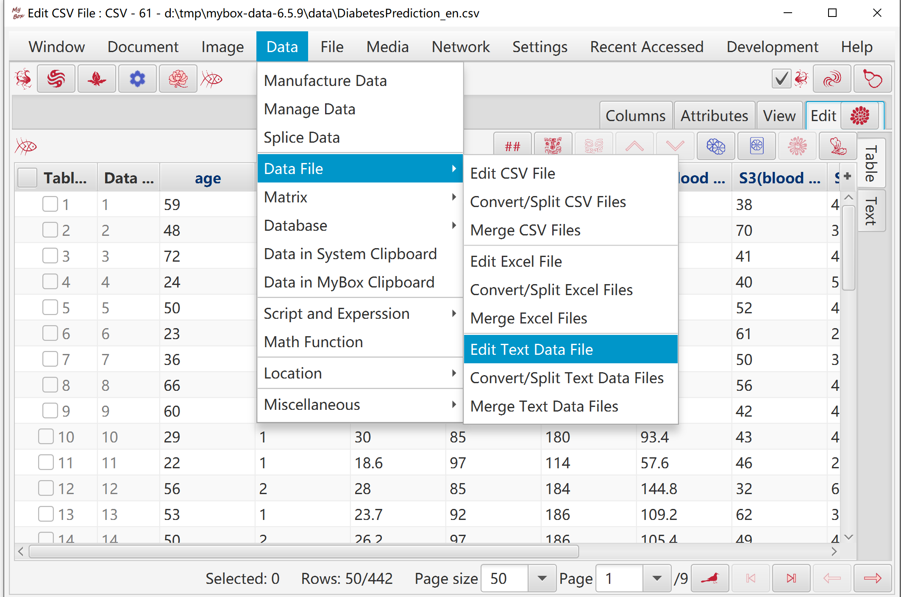
Hover or click button “Functions” top pop Functions Menu.

When changed, * is displayed in tab header. And ** is displayed when modifications have not applied.
Click button "Save" to write modifications to file and database:
Changes of rows in "Table", including modify/add/delete/sort, affect rows of current page in file.
Changes in "Columns" tab, including modify/add/delete/sort, affect all rows in file.
Changes of attributes and columns are saved in database.
Click button "Recover" to discard all modifications and load data from file and database.

Column names should not be null nor duplicated.
Data types are used to validate data values:
Invalid value is rejected when edit data.
Type is ignored when read or calculate data.
Data type affects sorting results.
Click button "OK" to apply it modifications to "Table".
Click button "Cancel" to discard its modifications and pick data from "Table".
Can rename all columns with sequence numbers.
Can set random colors.
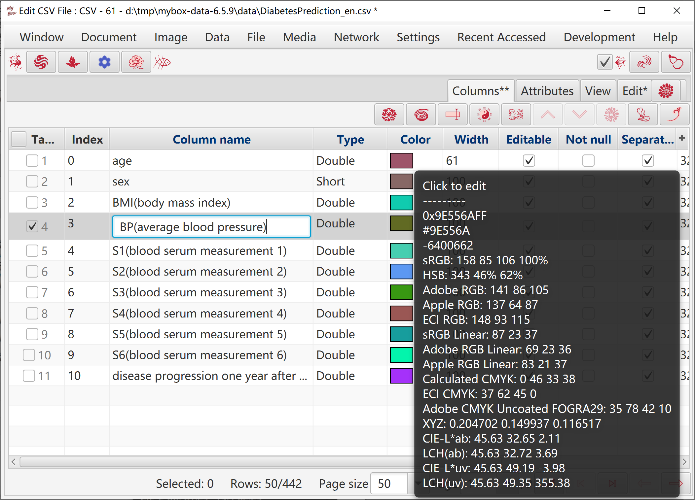
Edit the cell directly, or select row and click button “Edit” to pop Edit Window.
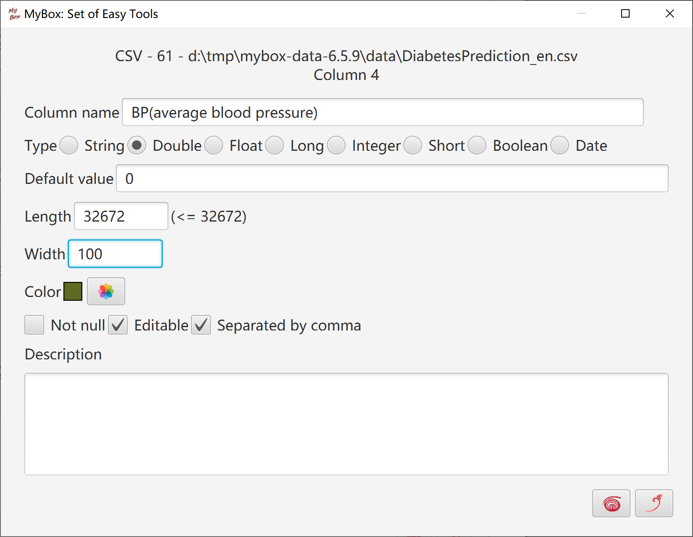
Data name, decimal scale, and maximum value of random.
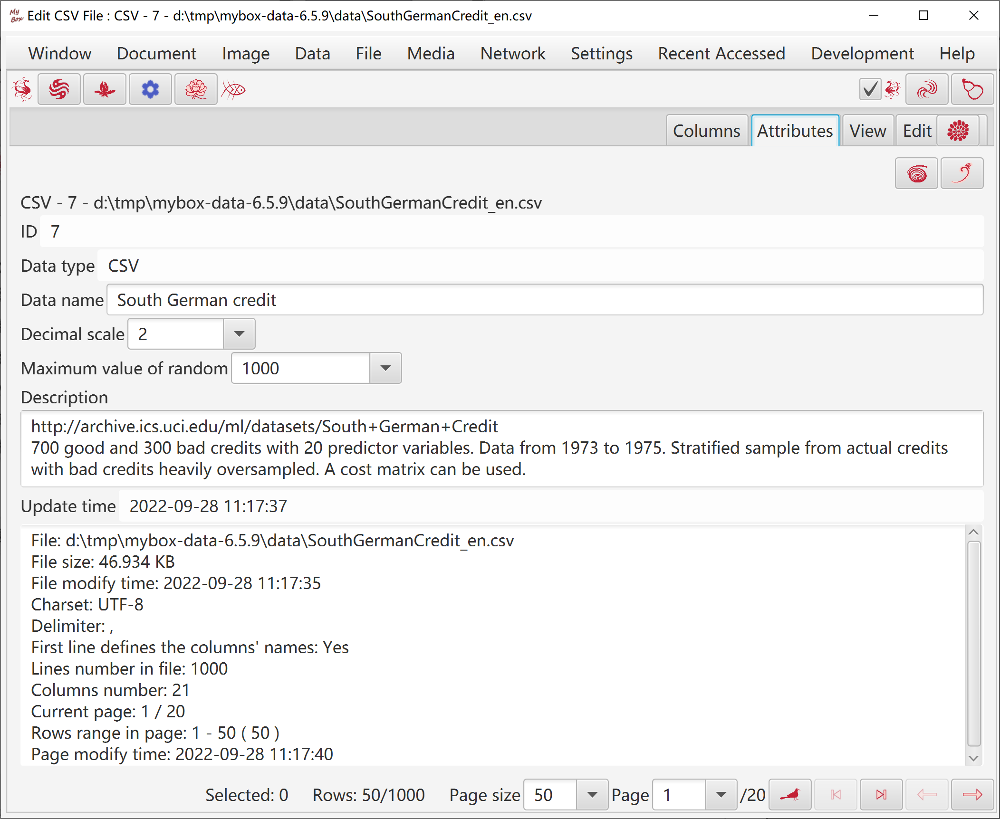
"Table" is the master edit mode:
Its modifications are applied to other panes automatically.
It is the final data to save.
To string values, except for text file, multiple lines can be edited and saved:
When the value is single line(not contain line break):
Text field is shown when click the data cell.
Write "\n" as line break in the value and commit the change(return or click other place).
When the value contains line breaks:
Text area is shown when click the data cell.
Write the text in multiple lines directly.
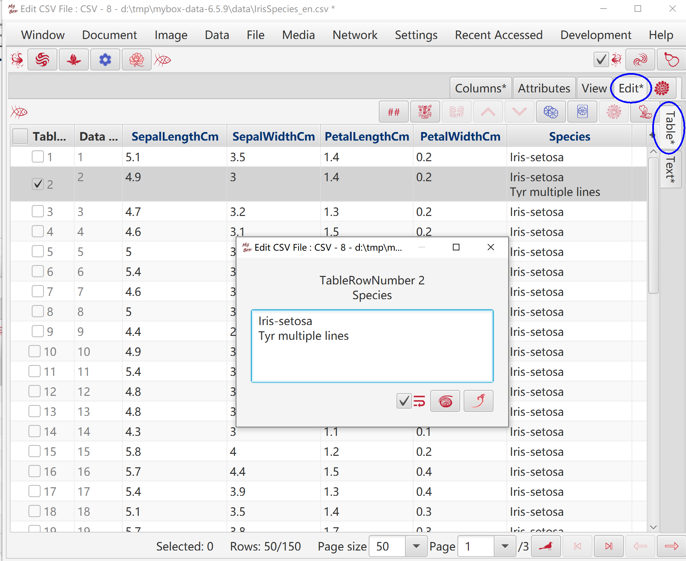
"Text" is the assist edit mode.
Click button "OK" to apply its modifications to "Table".
Click button "Cancel" to discard its modifications and pick data from "Table".
Click button "Delimiter" to pick data from "Table" and apply new delimiter while its modifications are discarded.
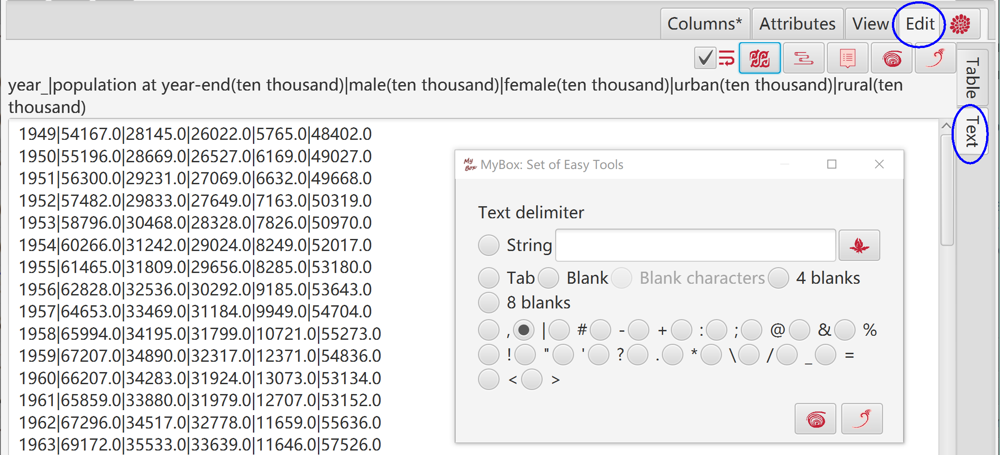
View data of current data.
Options: Form, Title, Column Names, Row Numbers.
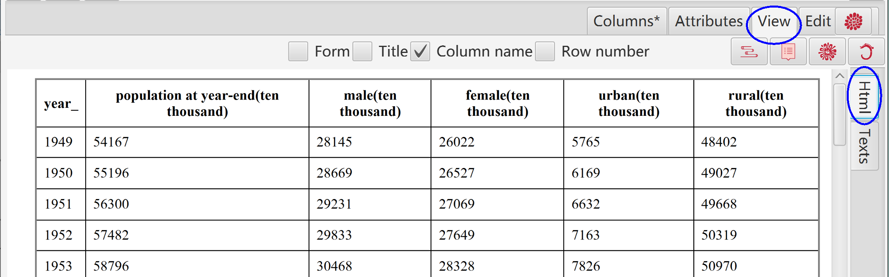
View data of current data.
Options: Form, Title, Column Names, Row Numbers.
Set delimiter.
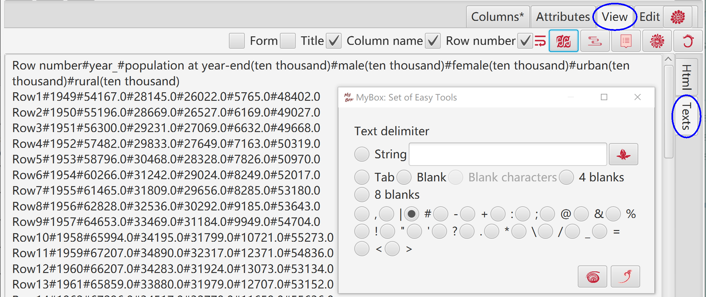
Read and parse contents in system clipboard.
Guess delimiter automatically.
Delimiter can be chosen from special characters or inputted regular expression.
First row can be set as column names.
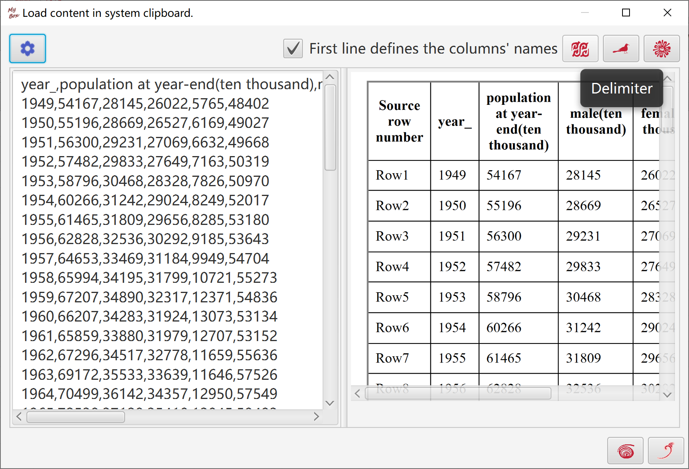
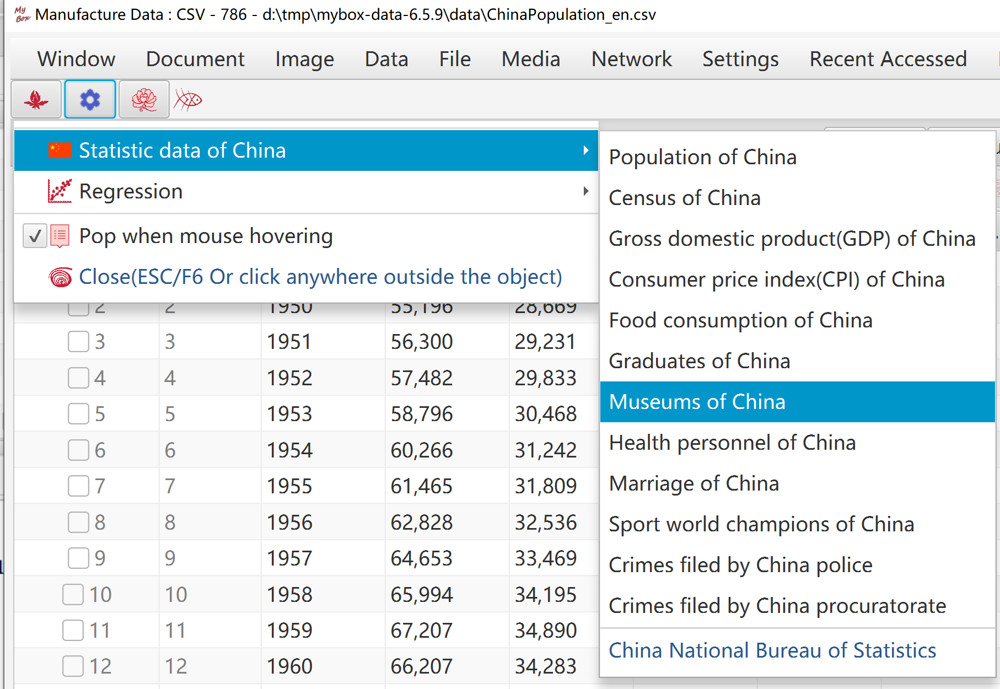
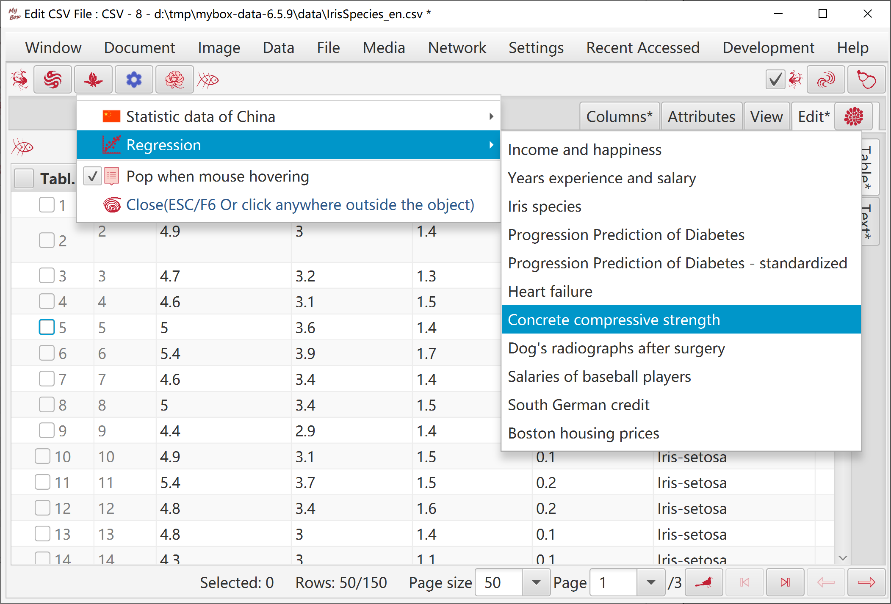
JavaScript expression can be data values when manufacture/trim/calculate data or generate chart:
If the script is blank, then return empty string.
Edit the script:
It can include any valid elments which Nashorn can parse(ECMAScript 5.1).
It should return a value finally.
It can include following placeholders:
#{TableRowNumber}
#{DataRowNumber}
#{<column_name>}
#{<column_name>- }
All valid placeholders are listed in left.
To save the script, click "Edit" button.
When MyBox evaluates the expression:
Placeholders are replaced with actual values of each data row .
Statistic values are calculated by all data.
'#{xxx}' is handled as string while #{xxx} is handled as number.
When handles all pages, script fails when it includes “#{TableRowNumber}” .
Hover or click button “Examples” to paste example codes.
Hover or click button “Histories” to paste codes in histories.
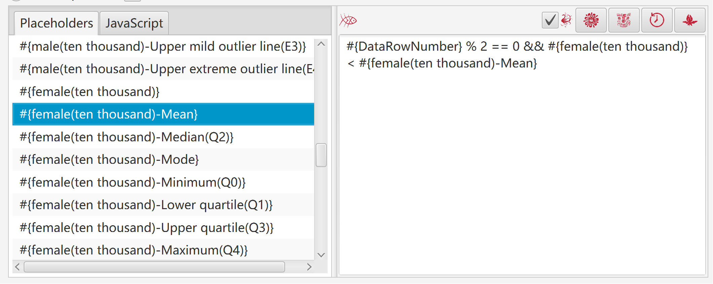
Examples:
|
expression |
meaning |
|---|---|
|
#{DataRowNumber} % 2 == 0 |
data row number is even |
|
#{TableRowNumber} % 2 == 1 |
odd rows in current page |
|
Math.abs(#{v1}) + Math.PI * Math.sqrt(#{v2}) |
calculation |
|
'#{v1}'.replace(/hello/ig, 'Hello') |
replace all “hello”(case-insensitive) as “Hello” in column “v1” |
|
'#{v1}'.toLowerCase() |
lower case of value of column “v1” |
|
'#{v1}'.split(‘,’) |
split value of column “v1” by comma |
|
#{v1} - #{v1-Mean} |
difference between value of column “v1” and mean of column “v1” |
“Row Filter” is special “Row Expression”, and can be condition to filter data rows.
It should return boolean value("true" or "false") finally.
Can set maximum rows.
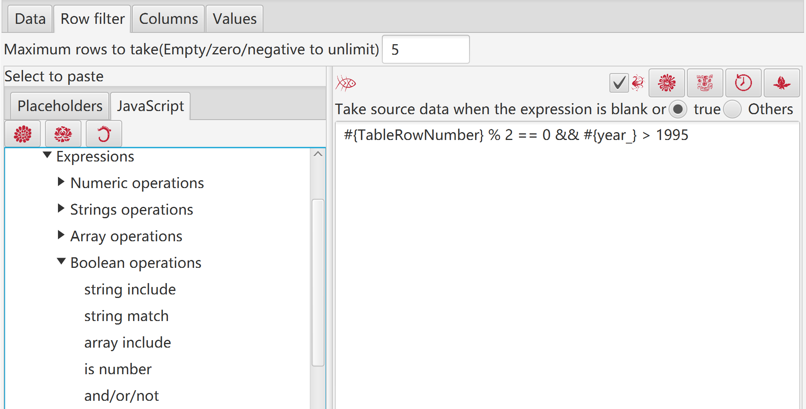
Exmaples:
|
Expression |
meaning |
|---|---|
|
#{DataRowNumber} % 2 == 0 |
data row number is even |
|
#{TableRowNumber} % 2 == 1 |
odd rows in current page |
|
Math.abs(#{v1}) >= 0 |
value of column “v1” is number |
|
#{v1}) > 0 |
value of column “v1” is larger than zero |
|
#{v1} - #{v2} < 100 |
difference between values of “v1” and “v2” is less than 100 |
|
'#{v1}'.length > 0 |
value of column “v1” is not empty |
|
'#{v1}'.search(/Hello/ig) >= 0 |
value of column “v1” includes “Hello”(case-insensitive) |
|
'#{v1}'.startsWith(‘Hello’) |
value of column “v1” starts with “Hello” |
|
var array = [ ‘A’, ‘B’, ‘C’];array.includes(‘#{v1}’) |
value of column “v1” is one of “A”, “B”, “C” |
|
#{v1} < #{v1-Mean} |
value of column “v1” is less than mean of column “v1” |
Hover or click button “Function” to select functions under menu item “Modify”.
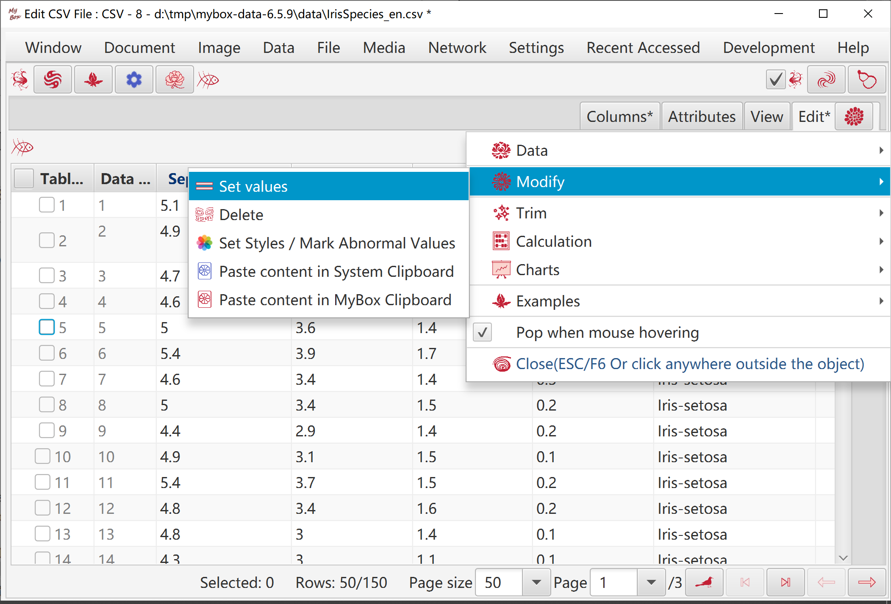
Select data:
Rows can be: current page, selected rows, or all pages.
Select columns. If no column is selected, then all columns are taken.
Set row filter.
Set values of selected data as following:
Constant：0, 1, blank, or inputted value
Random, random of non-negative
Add prefix, append suffix, set decimal scale, or add sequence numbers
When selected data are sqaure, whose rows number equals to columns number, they can be set as following: gaussian distribution, identify matrix, upper triangular matrix, lower triangular matrix.
Row expression
If handle all pages of data file, then auto-backup before set values.

Select data:
Rows can be: current page, selected rows, or all pages.
Set row filter.
Option: Whether continue when error.
If handle all pages of data file, then auto-backup before delete.
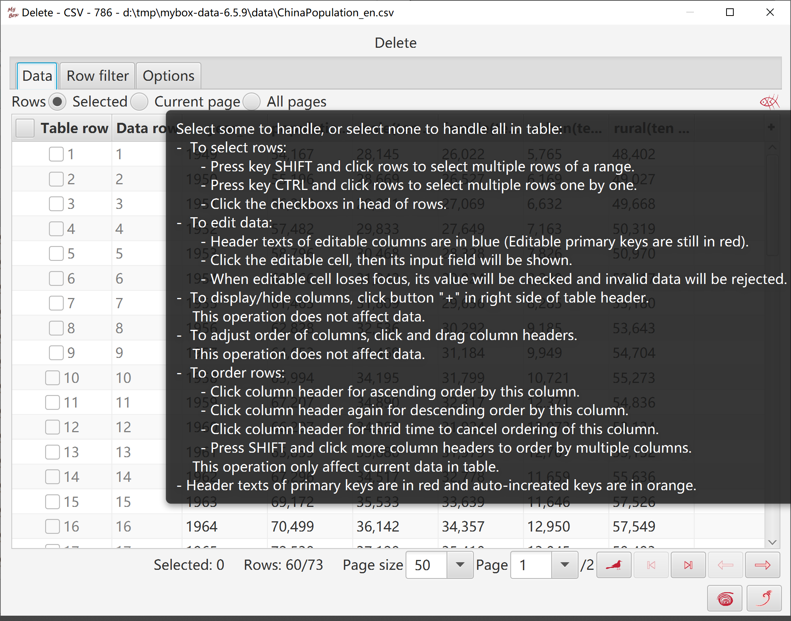
Add/Edit/Delete/Rename styles.
Define title and sequence number of the style.
Set whether the style marks abnormal values.
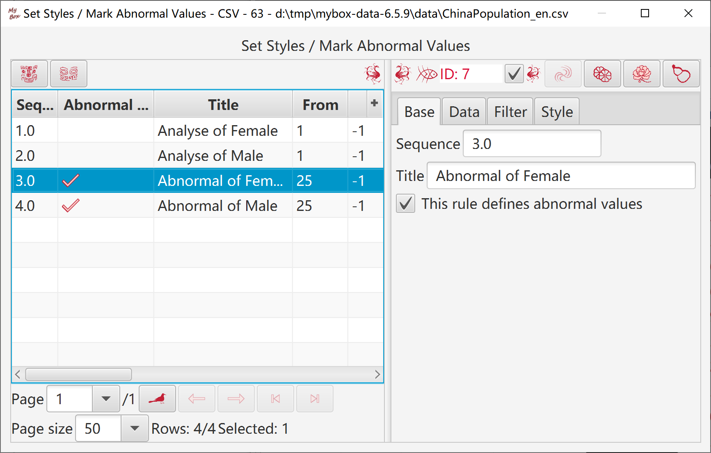
Define conditions to determine which data cells to apply the style:
Range of data rows
Column names.
Row filter.
Notice, data of a row number may be changed when some rows are added or deleted. Example, when insert 2 rows before "row 6", original "row 12" becomes "row 14" while current "row 12" was "row 10".
So "row number" is not right way to locate a specific data row while rows number is changing. A way to refer sepcial rows is the expression composed of column values.
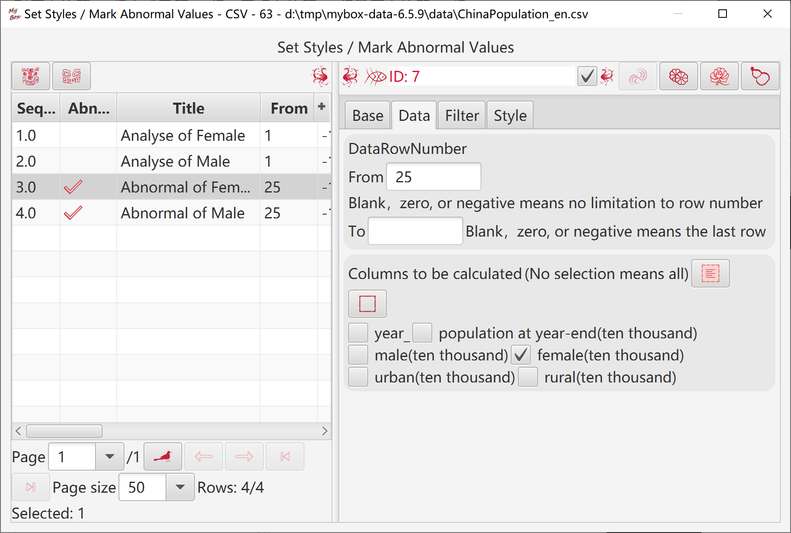
Font color, font size, background color, bold, etc.
More values in format of JavaFx CSS.
When load data page, all styles of the data are applied to the rows one by one in order of their sequence numbers.
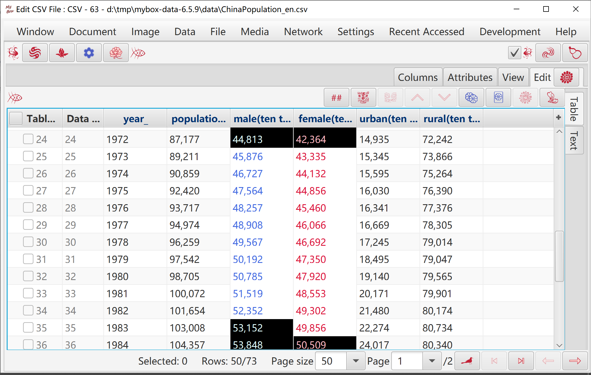
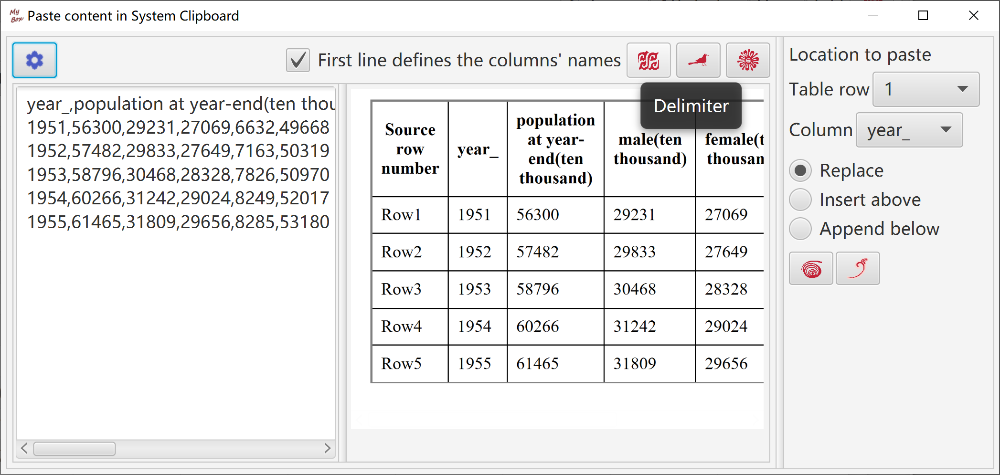
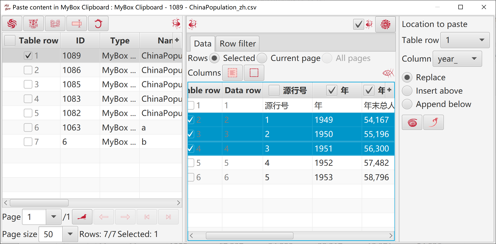
Hoever or click button “Function” and select functions under menu item “Trim”.
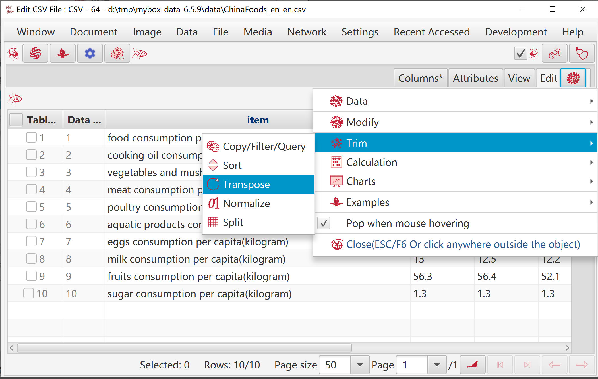
Select data:
Rows can be: current page, selected rows, or all pages.
Select columns. If no column is selected, then all columns are taken.
Set row filter.
Target can be following: new csv/excel/text file, matrix, system clipboard, MyBox clipboard, database table.
When rows are current page or selected ones, target can be defined location in table to insert/append/replace.
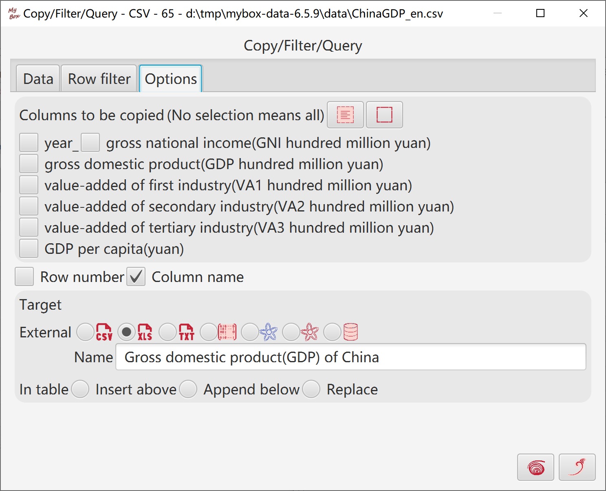
Select data:
Rows can be: current page, selected rows, or all pages.
Set row filter.
Calculate:
Select the column to sort and whether descending.
Data type of column affects sorting results.
Maximum rows number of results can be set.
Select columns to be copied.
Target can be following: new csv/excel/text file, matrix, system clipboard, MyBox clipboard, database table.
When rows are current page or selected ones, target can be defined location in table to insert/append/replace.
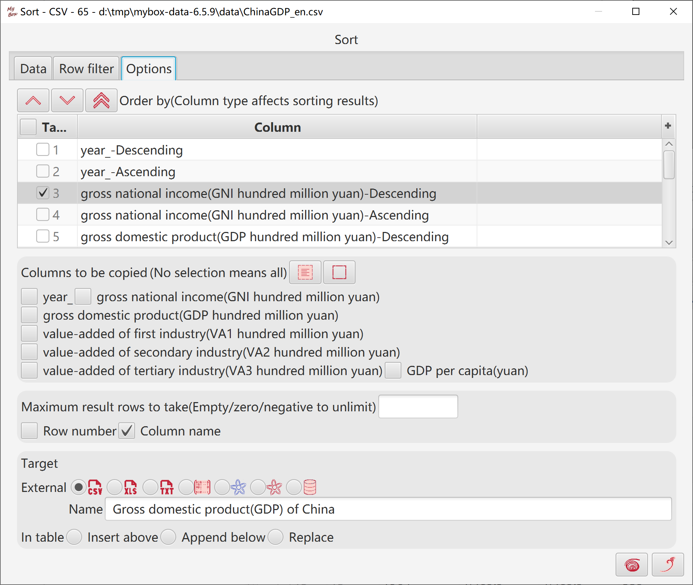
Select data:
Rows can be: current page, selected rows, or all pages.
Select columns. If no column is selected, then all columns are taken.
Set row filter.
Calculate: Options to set first column as column names.
Target can be following: new csv/excel/text file, matrix, system clipboard, MyBox clipboard, database table.
When rows are current page or selected ones, target can be defined location in table to insert/append/replace.
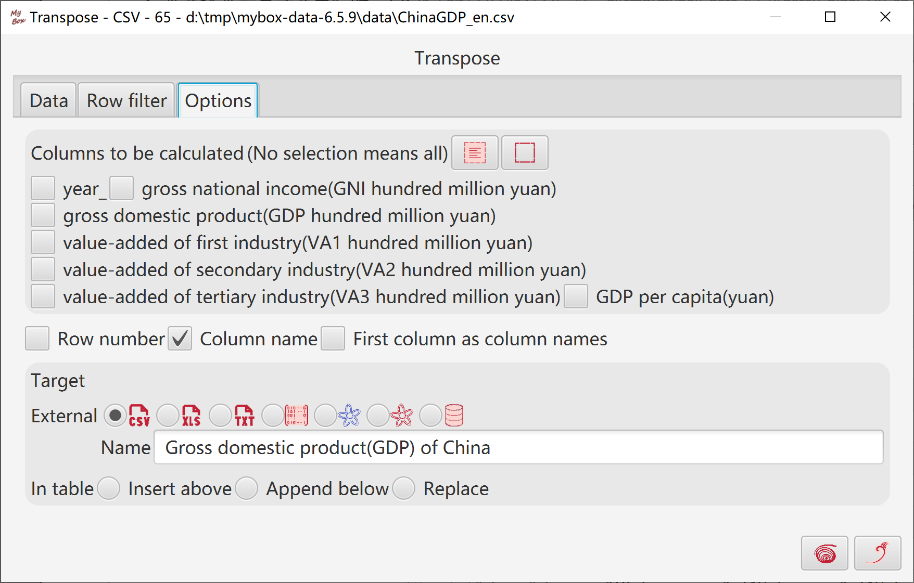
Select data:
Rows can be: current page, selected rows, or all pages.
Set row filter.
Calculate:
Select columns to be calculated.
Accroding to: Columns/rows/all.
Algorithms: MinMax(Range can be set), sum(L1), ZScore(L2).
To non-numeric, skip or count as zero.
Select columns to be copied.
Target can be following: new csv/excel/text file, matrix, system clipboard, MyBox clipboard, database table.
When rows are current page or selected ones, target can be defined location in table to insert/append/replace.
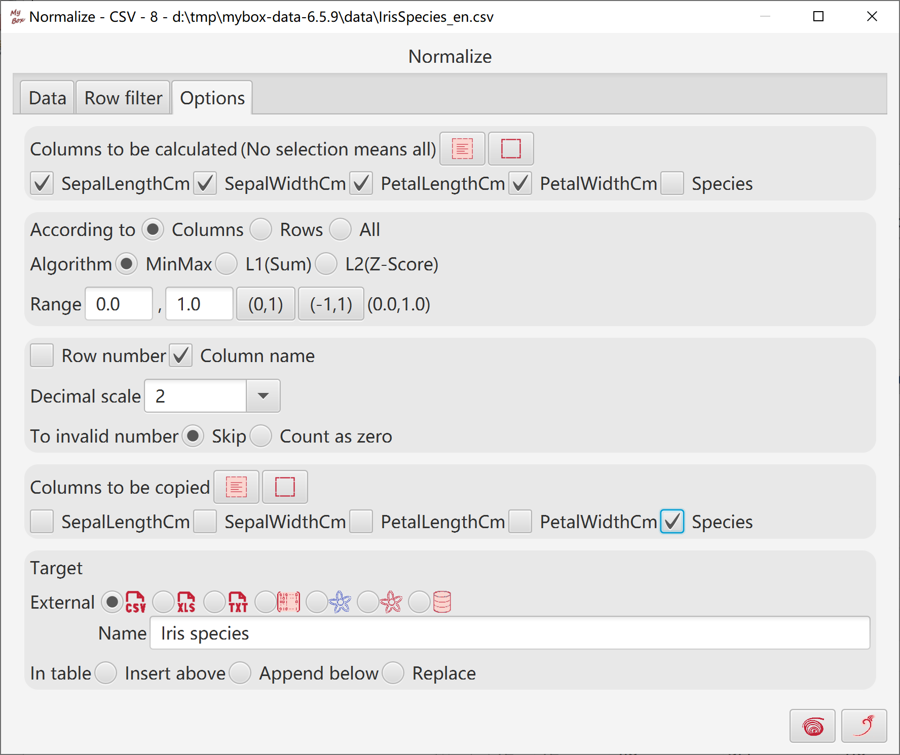
Select data:
Rows can be: current page, selected rows, or all pages.
Set row filter.
Options:
Select columns to be copied.
By"Size of split":
Selected rows are divided into files which hold the defined number of data rows.
The last file may hold less rows.
By "Number of split":
Selected rows are divided as possible as the defined number of files.
Number of generated files may be less than expected if row filter is defined.
By "Start-End list":
Selected rows are divided as the ranges in the list.
The indices are compared with "data row number" of data rows.
Indices are 1-based. Ranges include their "Start" and "End".
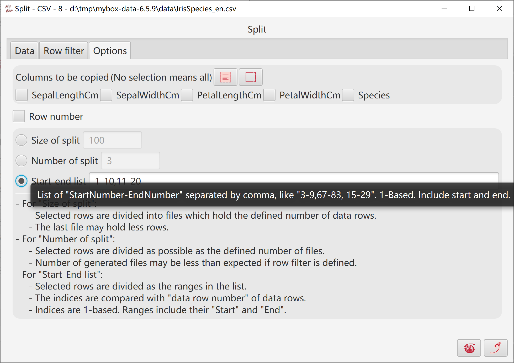
Hover or click button “Function” to select functions under menu item “Calculation”.
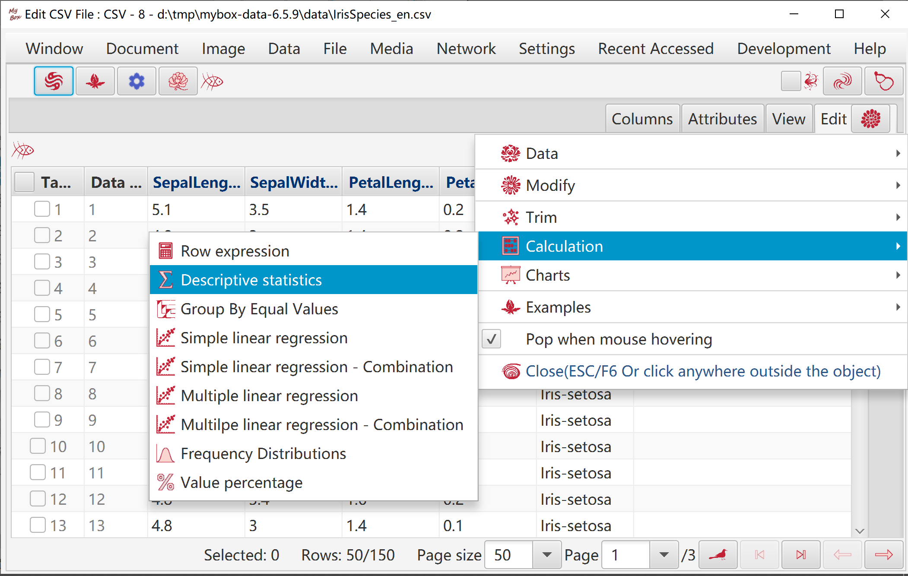
Select data:
Rows can be: current page, selected rows, or all pages.
Set row filter.
Calculate:
Input name of values.
Input row expression.
Select columns to be copied.
Target can be following: new csv/excel/text file, matrix, system clipboard, MyBox clipboard, database table.
When rows are current page or selected ones, target can be defined location in table to insert/append/replace.

Select data:
Rows can be: current page, selected rows, or all pages.
Set row filter.
Calculate:
Select columns to be calculated.
Following values can be generated:
count, sum, mean, geometric mean, sum of squares, population variance, sample variance, population standard deviation, sample standard deviation, skewness, minimum(Q0), lower quartile(Q1), median(Q2), upper quartile(Q3), maximum(Q4), upper extreme outlier line(E4), upper mild outlier line(E3), lower mild outlier line(E2), lower extreme outlier line(E1), mode
Accroding to: Columns/rows/all.
Set decimal scale.
To non-numeric, skip or count as zero.
Target can be following: new csv/excel/text file, matrix, system clipboard, MyBox clipboard, database table, or defined location in table to insert/append/replace.
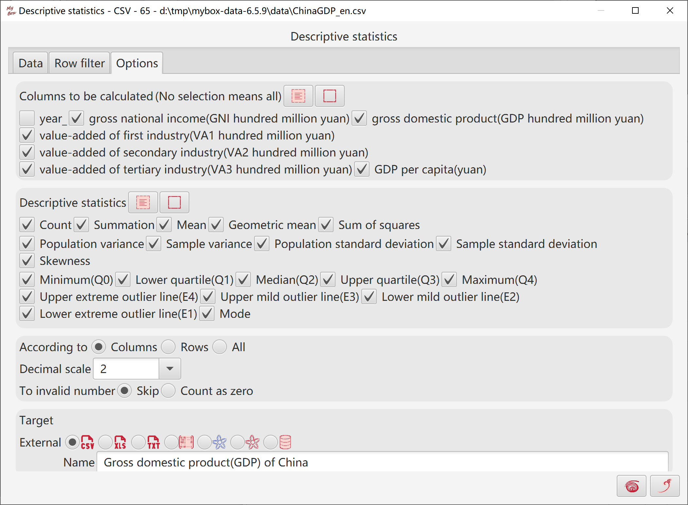
Select data:
Rows can be: current page, selected rows, or all pages.
Set row filter.
Calculate:
Select some columns as "group by". Need not be numbers.
Select some aggregate values to be calculated:
Like avarage, max, min, variance, standard deviation, etc.
"count" is always calcualted, and not in the list.
Multiple items can be selected. None selection is permitted.
Involved values should be numbers.
Select some values as "order by". Multiple items can be selected. None selection is permitted
Input maximum number of result rows. Blank/zero/negative means no limitation.
To invalid numbers, option to set as blank or zero.
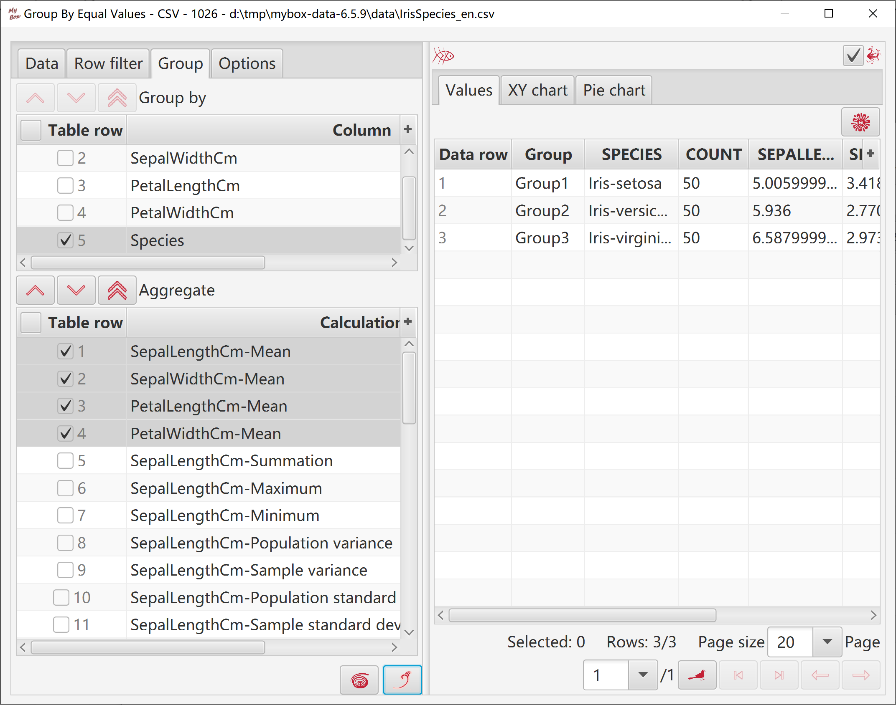
Calculated groups and their aggregate values are displayed in XY chart.
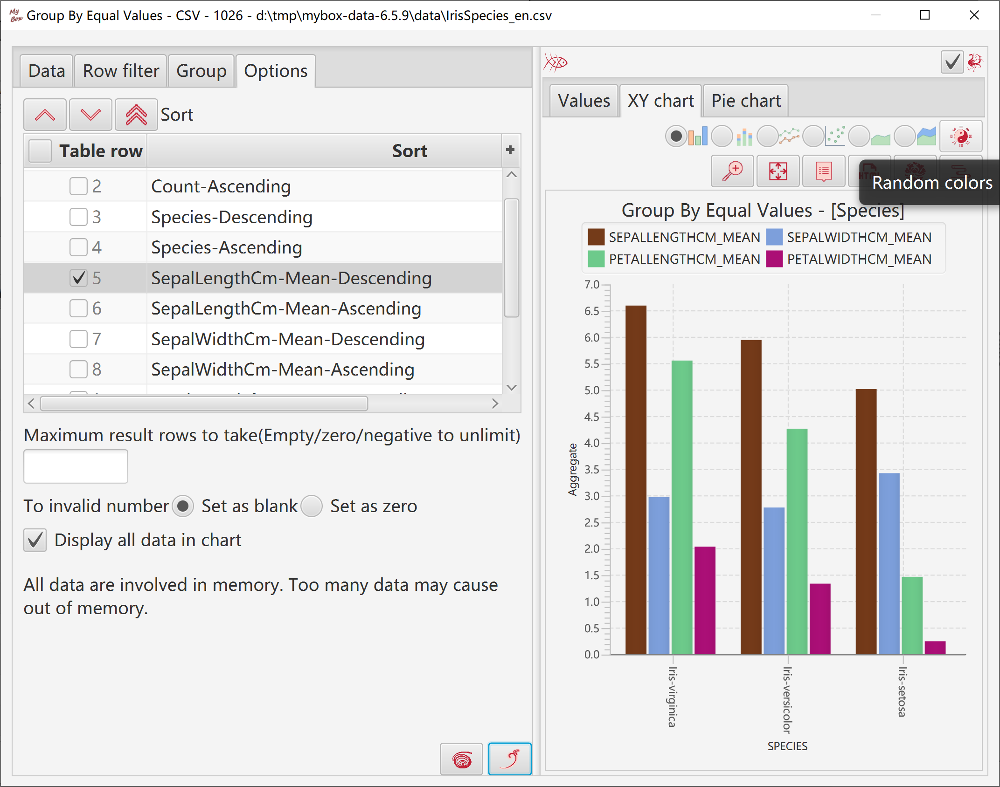
Calculated groups and their count are displayed in Pie chart.
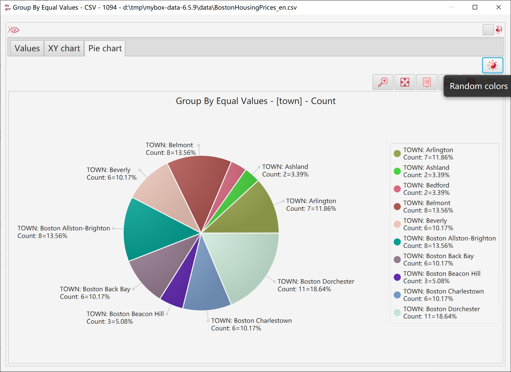
In charts:
If only one column in group, category values are values of this column.
If multiple columns in group, category values are names of groups.
Option to display all data in charts:
If yes, lots of data may cause out of memory.
If no, only current page of results are display in charts.
Data overflow may happen.
This tool is based on Apache Commons Math.
The regression does not store data, so calculation itself has not memory limitation when handle lots of rows.
Select data:
Rows can be: current page, selected rows, or all pages.
Set row filter.
Calculate:
Select one column as independent variable.
Select another column as dependent variable.
Option whether includes intercept.
Set decimal scale.
Display values status of regression steps in table, including number of observations, slope, intercept, coefficient of determination(R-Square), correlation coefficient(R), mean of squared error(MSE) , sum of squared errors(SSE), total sum of squares(SSTO), sum of squares about regression(SSM/SSR), etc.
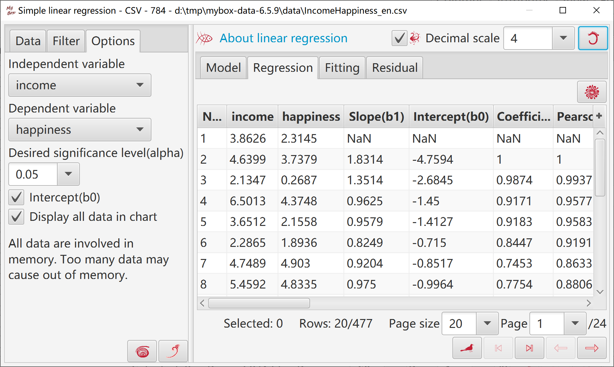
Display fitted liear model.
Display data status of last regression step.
Input value fo independent variable, and generate predicted value.
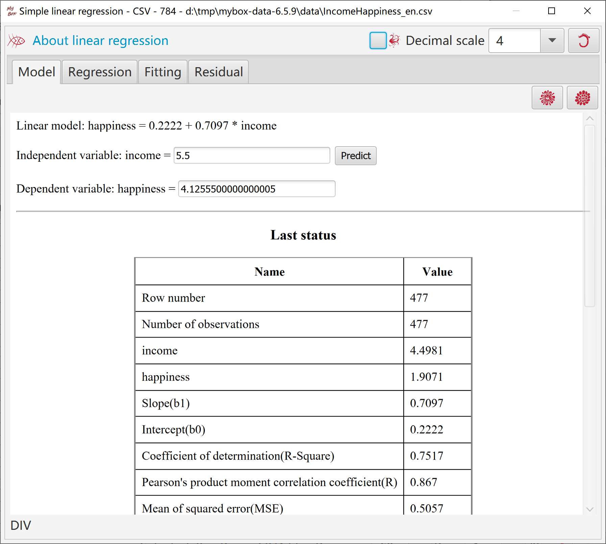
When handle all data rows(all pages), option to display all values in chart.
When display all values in chart, need concern memory limitation when load lots of data.
Or else only values in current page will be displayed in chart while all pages involve regression, and no memory limitation.
Set parameters of plot, X axis and Y axis.
Options to display fitted points, fitted line, or model description in chart.
Options to display data labels.
Set random colors to fitted points/line.
Fitted chart can be popped.
Html including fitted chart and its data can be created.
Display fitted chart's data in table.
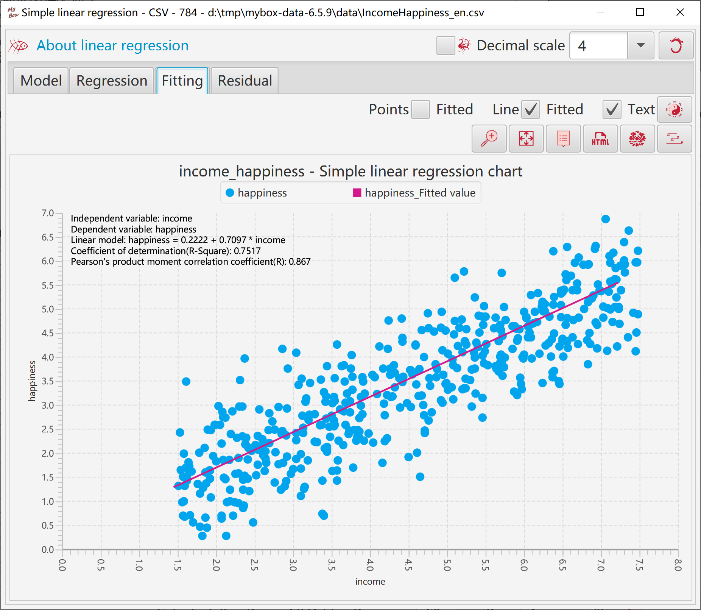
X axis can be set as: predicted value, independent varaible, or actual value.
Option whether standardize residuals.
When standardize residuals, upper line and lower line of Sigma2(95%) will be displayed.
Set random color to points and lines.
Display residual chart's data in table.
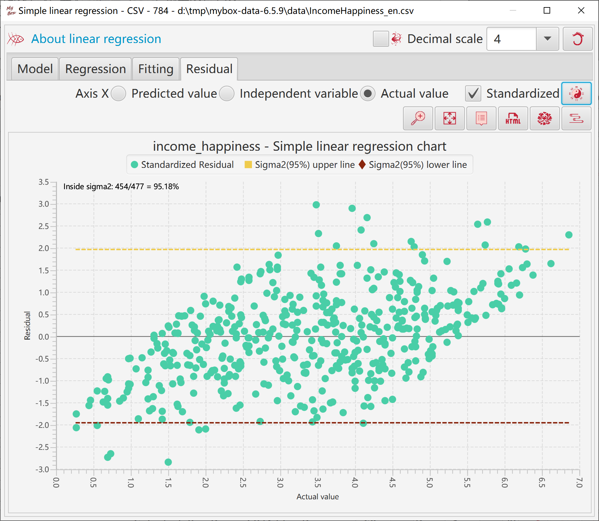
This tool helps to generate data of simple linear regression:
Select some columns as candidates of independent variables.
Select some columns as candidates of dependent variables.
Select options like decimal scale, alpha, whether include intercept.
When click button "OK":
Make pairs from candidates : one as independent variable and another as dependent variable.
Calculate the regression models.
Sort the modes by their coefficient of determination(R-Square) in descending order.
Select one model and click button "View" to view its regression data, fitting chart, and residual chart.
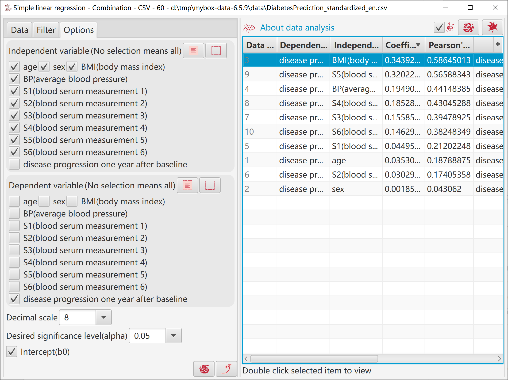
This tool helps to generate data of multiple linear regression based on Apache Commons Math:
Select some column as independent variables, whose data should be numbers.
Select a column as dependent variable, whose data should be numbers.
Select whether include intercept.
Click button "OK":
Tool normalizes involved data by Z-Score.
Tool calculates multiple linear regression by Ordinary Least Squares(OLS).
Results include intercept, coefficients, R-Squre, adjusted R-Squre.
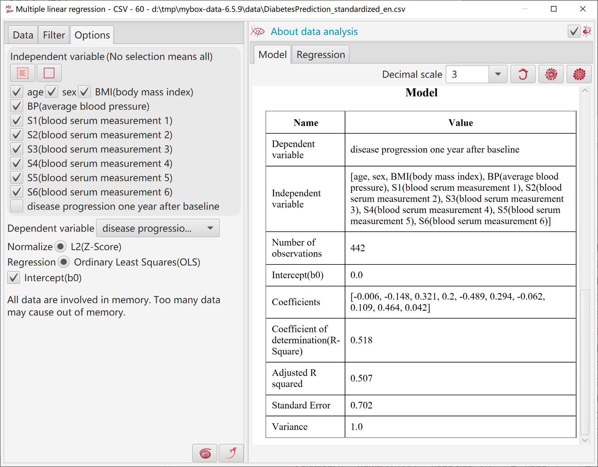
User can input values of independent variables and predict value of dependent variable.
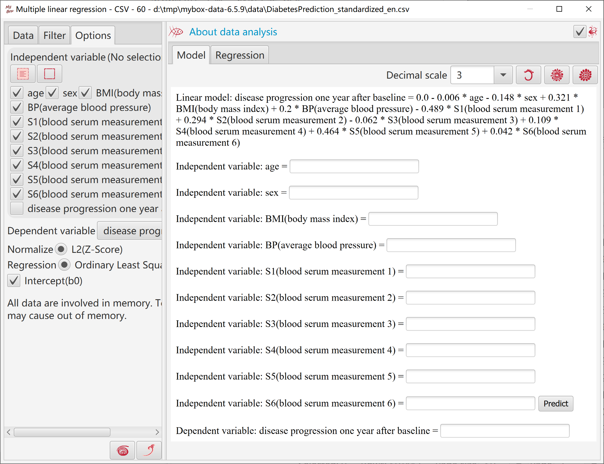
This tool helps to generate data of multiple linear regression based on Apache Commons Math:
Select some columns as candidates of independent variables.
Select some columns as candidates of dependent variables.
Select whether include intercept.
When click button "OK", the tool does following:
Make combination of candidates as independent variables and dependent variable .
Calculate the regression models.
Sort the modes by their adjusted coefficient of determination(R-Square) in descending order.
Select one model and click button "View" to view its regression data
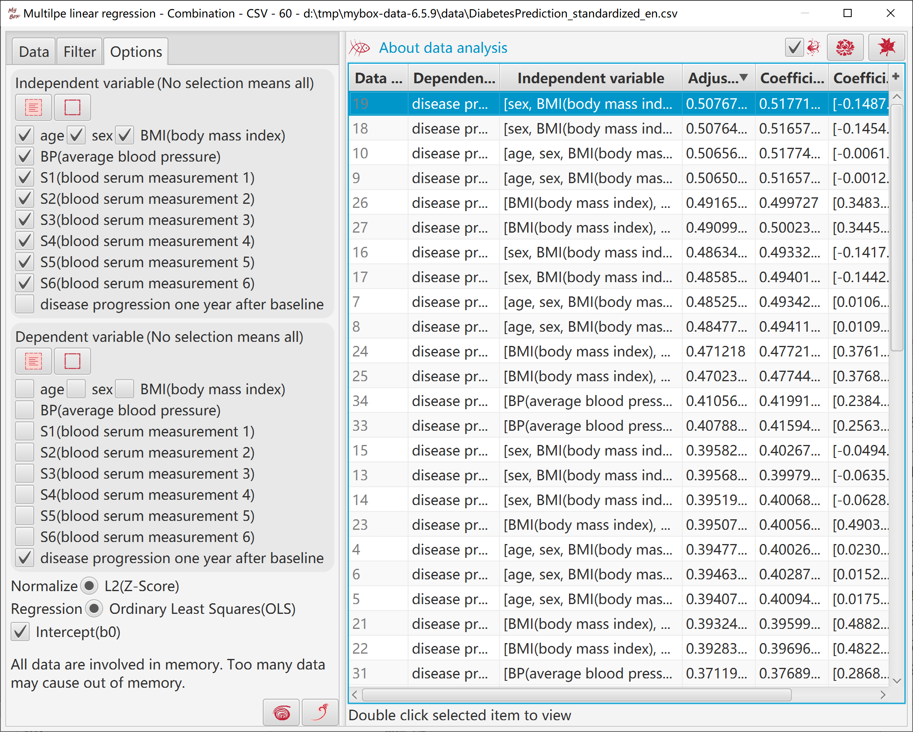
Select data:
Rows can be: current page, selected rows, or all pages.
Set row filter.
Calculate:
Select one column to count frequency.
Option whether case-insensitive
Set decimal scale.
Target can be following: new csv/excel/text file, matrix, system clipboard, MyBox clipboard, database table.

Select data:
Rows can be: current page, selected rows, or all pages.
Set row filter.
Calculate:
Select columns to be calculated.
Accroding to: Columns/rows/all.
Select how to treat negative values: zero or absoluate value.
Set decimal scale.
To non-numeric, skip or count as zero.
Select columns to be copied.
Target can be following: new csv/excel/text file, matrix, system clipboard, MyBox clipboard, database table.
When rows are current page or selected ones, target can be defined location in table to insert/append/replace.

Hover or click button “Function” to select functions under menu item “Chart”.
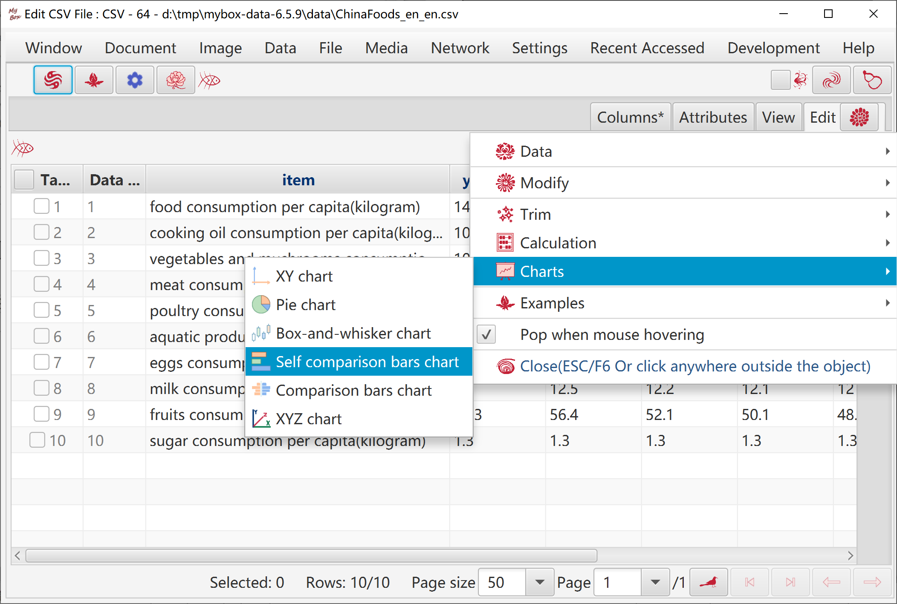
Select data:
Rows can be: current page, selected rows, or all pages.
Set row filter.
Calculate:
Select one column as "Category Axis", to define data names..
Multiple columns can be selected as data in direction of "Number Axis". Different value series are shown in different colors or shapes.
To non-numeric, skip or count as zero.
When display all data rows(all pages), need concern memory limitation.
By default, "Category Axis" is the horizontal axis and "Number Axis" is the vertical axis.
Select type of XY Chart.
Click button “Menu” to set parameters of chart.
Click button “Pop” to display current chart as image in popped window.
Click button “Data” to display data of the chart in data table.
Click button “Html” to display data of the chart in html page.

Represents data size with bars' heights.
"Category" column is always counted as strings.
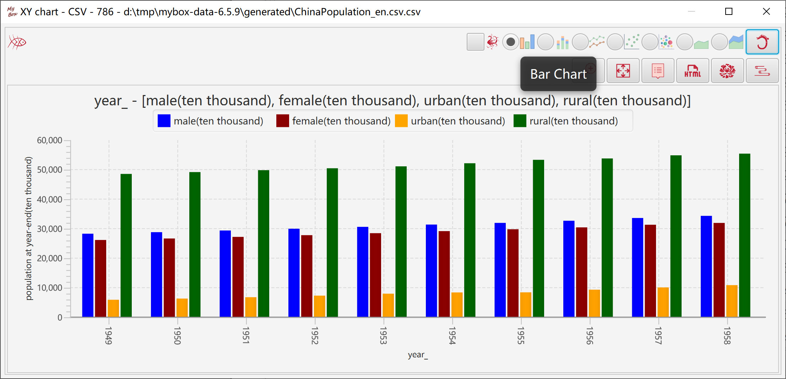
Represents data size with bars' heights.
"Category" column is always counted as strings.

Represents data trend with lines connecting points.
"Category" column can be counted as strings or numbers.
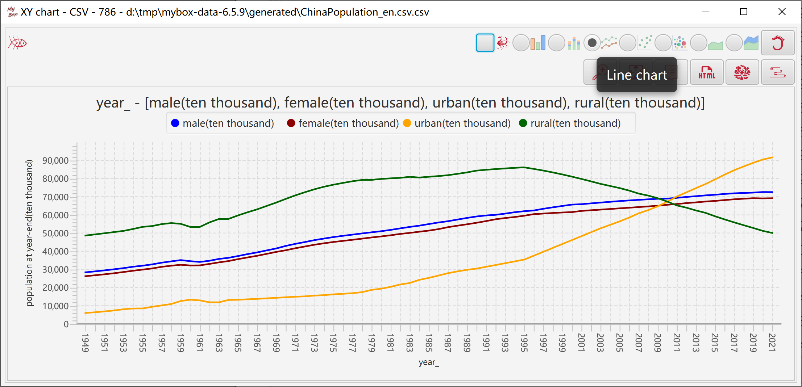
Represents data distribution with symbols.
"Category" column can be counted as strings or numbers.
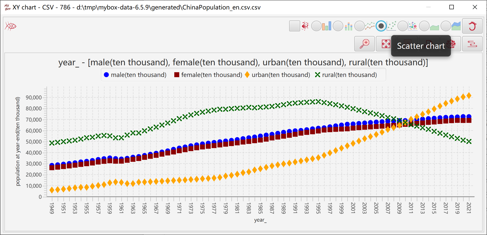
Represents data size with circles of different radius：
"Category Column" and "Value Column" define coordinates of data.
Select several columns as "Size Columns" to defines data size.
All columns should be numbers. Size columns should be non-negative.
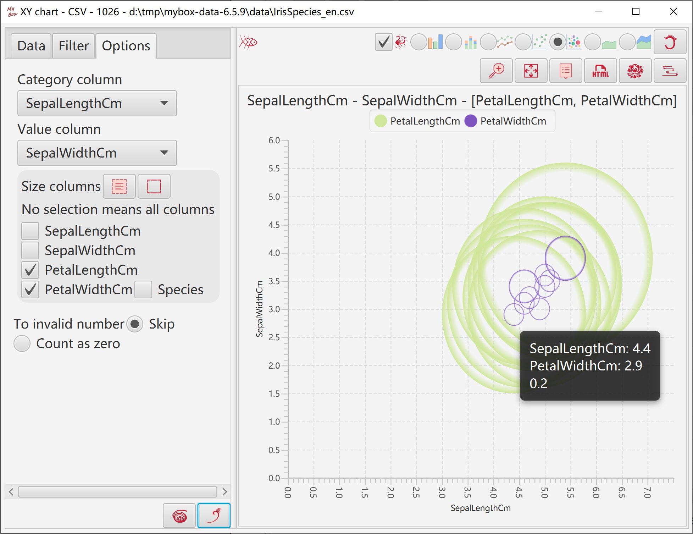
Represents data size with area size.
"Category" column is always counted as strings.
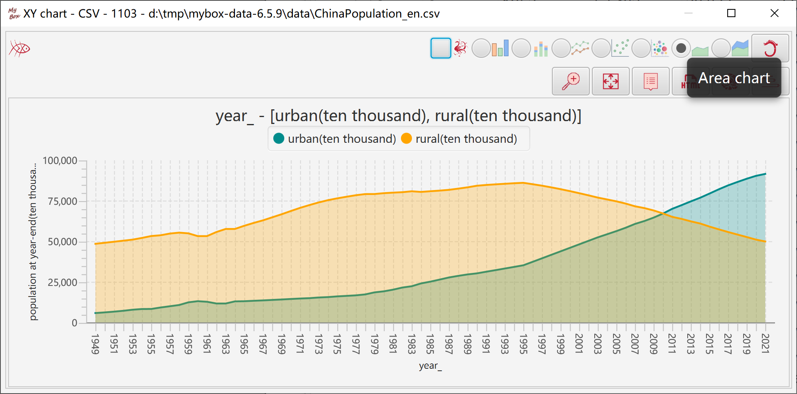
Represents data size with area size.
"Category" column is always counted as strings.

Options about label: not display, point, value, category, etc.
Location of labels.
Font size of labels.
Decimal scale.
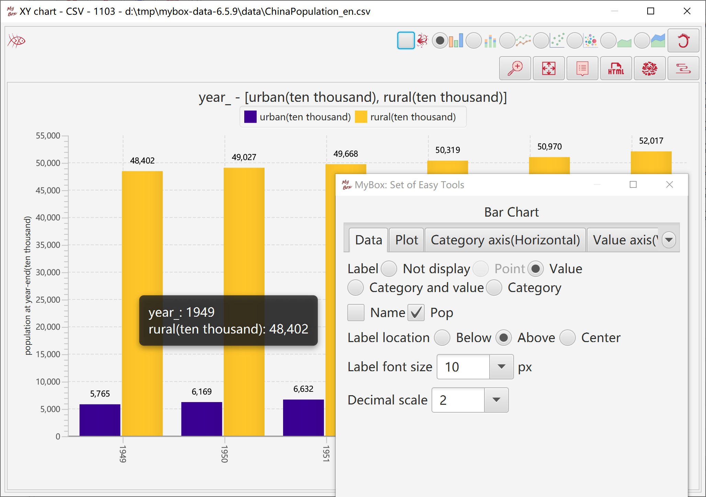
Set parameters of plot: title, font size, location of legend, zero-lines, grid lines, line width, etc.
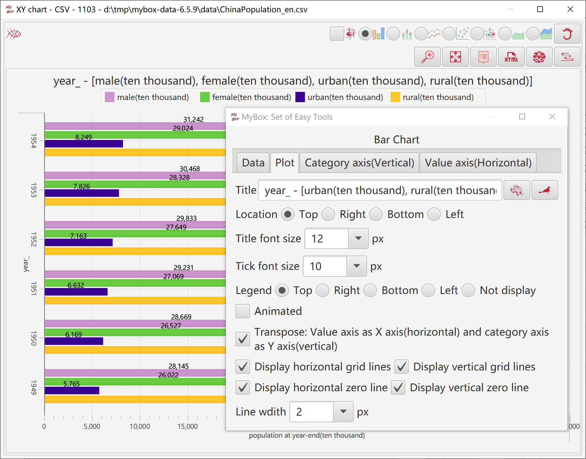
Set parameters of category axis: label, font size, location, tick, count values as string or number, coordinate, etc.
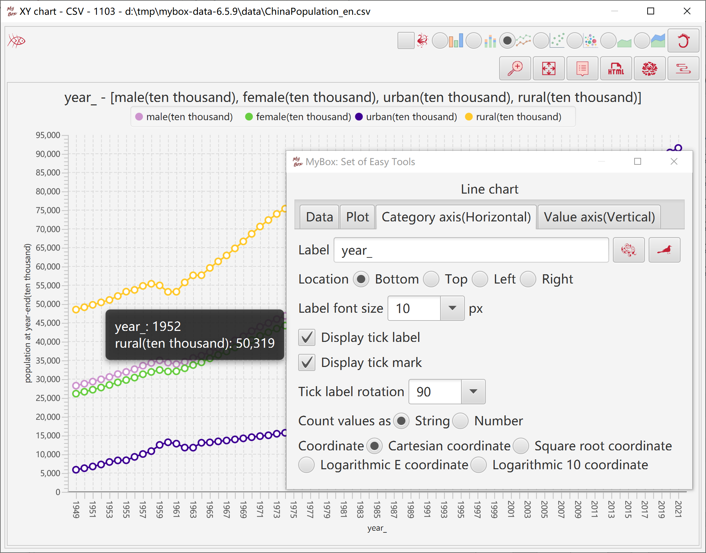
Set parameters of number axis: label, font, location, tick, coordinate, etc.

Select data:
Rows can be: current page, selected rows, or all pages.
Set row filter.
Calculate:
Select one column as "Category Axis", to define data names..
Select another column as "Number Axis".
Data numbers are represented as percentages with a circle divided into segments.
Value column should be non-negative.
When display all data rows(all pages), need concern memory limitation.
Click button “Menu” to set parameters of chart.
Click button “Pop” to display current chart as image in popped window.
Click button “Data” to display data of the chart in data table.
Click button “Html” to display data of the chart in html page.
Box-and-whisker chart represents data distribution:
Sort data according to column/row/all in ascending order.
Following items can show aggregation and discreteness of data:
Minimum Q0 = in 0%(start) of the data list
Lower quartile Q1 = in 25% of the data list
Median Q2 = in 50%(middle) of the data list
Upper quartile Q3 = in 75% of the data list
Maximum Q4 = in 100%(end) of the data list
Following values can be used to mark ourliers of data:
Lower extreme outlier line E1 = Q1 - 3 * ( Q3 - Q1 )
Lower mild outlier line E2 = Q1 - 1.5 * ( Q3 - Q1 )
Upper mild outlier line E3 = Q3 + 1.5 * ( Q3 - Q1 )
Upper extreme outlier line E4 = Q3 + 3 * ( Q3 - Q1 )
Following values can be referred for discreteness:
Mean = avarage of the data list
Calculate:
Based on line chart.
According to: columns, rows(select category column), or all.
Set or select:
Box width.
Whether display outliers lines or mean.
Whether display connection lines of values, and whether dotted lines.
Random colors.
Click button “Menu” to set parameters of chart.
Click button “Pop” to display current chart as image in popped window.
Click button “Data” to display data of the chart in data table.
Click button “Html” to display data of the chart in html page.
Self comparison bars show difference between data and reference values.
Bars are calculated by following rulers:
If value is zero, no bar
When compare as absoluate values:
maximum_value = maximum_absolute_value_of_column/row/all
precentage = absolute_value / maximum_value
width = maximum_width * precentage
color = If value is larger than zero, color_of_column.
If value is less than zero, inverted_color_of_column
When compare as range of minimum and maximum:
maximum_value = maximum_value_of_column/row/all
minimum_value = minimum_value_of_column/row/all
precentage = (value - minimum_value) / (maximum_value - minimum_value)
width = maximum_width * precentage
color = color_of_column
Data: Select rows in table or select all data rows(all pages), and select columns.
Calculate:
Select one columns to calculated and columns to be copied.
Compare: columns/rows/all.
According to: absoluate values, or range of minimum and maximum.
When display all data rows(all pages), need concern memory limitation.
Set or select:
Maximum width
Whether display row numbers, values, percentages, categories, calculated values.
Edit data in chart.
Edit html of chart.
Comparison bars show difference between two series of data.
Bars are calculated by following rulers:
If value is zero, no bar
When compare as absoluate values:
maximum_value = maximum_absolute_value_of_value_columns
precentage = absolute_value / maximum_value
width = maximum_width * precentage
color = If value is larger than zero, color_of_column.
If value is less than zero, inverted_color_of_column
When compare as range of minimum and maximum:
maximum_value = maximum_value_of_value_columns
minimum_value = minimum_value_of_value_columns
precentage = (value - minimum_value) / (maximum_value - minimum_value)
width = maximum_width * precentage
color = color_of_column
Data: Select rows in table or select all data rows(all pages), and select columns.
Calculate:
Select one column as category column(unnecessary)
Select tow value columns
According to: absoluate values, or range of minimum and maximum.
When display all data rows(all pages), need concern memory limitation.
Set or select:
Maximum width
Whether display row numbers, values, percentages, categories, calculated values.
Edit data in chart.
Edit html of chart.
Select data:
Rows can be: current page, selected rows, or all pages.
Set row filter.
Select axises:
Select one column as axis X. Select as string or number.
Select one column as axis Y. Select as string or number.
Select several columns as axis Z. Select as string or number.
Select other columns to be popped in label.
Set parameters of the chart: projection, color, width, height, whether dark, point size.

Select data:
Rows can be: current page, selected rows, or all pages.
Set row filter.
Select axises:
Select one column as axis X. Select as string or number.
Select one column as axis Y. Select as string or number.
Select one column as axis Z. Select as string or number.
Select other columns to be popped in label.
Set parameters of the chart: projection, color, width, height, whether dark, wire frame.
Hover or click button “Function” to select functions under menu item “Data”.

Select data:
Rows can be: current page, selected rows, or all pages.
Select columns. If no column is selected, then all columns are taken.
Set row filter.

Select targets and their formats: csv, texts, excel, xml, json, html, pdf, MyBox Clipboard.
Split files in maximum lines.
Select data:
Rows can be: current page, selected rows, or all pages.
Set row filter.
Select columns to be copied.
Option to import data.
Create
auto-increment column, or select some columns as primary key.

This tool manages following objects:
Data Files
Record is created/updated when csv/excel/texts data file is opened by its editor.
Data are saved in data file.
Deleting record of data file will not delete data file itself.
Data Clipboards
Record is created when data is copied into MyBox Clipboad.
Data are saved in file under MyBox internal path.
Deleting record of data clipboards will delete its internal file.
Matrices
Records are maintained by Matrices Manager.
Data are saved in MyBox database.
Deleting record of matrix will delete data of this matrix.
Data Tables
Records are maintained by Data Tables Manager.
Data are saved in MyBox database tables.
Deleting record of data table will delete data of this data table.
Select or open two data.
Select rows and columns from the two data:
Rows can be: current page, selected rows, or all pages.
Select columns. If no column is selected, then all columns are taken.
Set row filter.
Options:
Direction: vertical, horizontal
Rows/Columns number by: Data A, Data B, longer, shorter.
Target can be following: new csv/excel/text file, matrix, system clipboard, MyBox clipboard, database table.
In the file:
In general, the first line(header) defines column names, and each of followed lines defines a row of data.
Values are separated by "delimiter" which can be string.
If a value contains delimiter, it will be surrounded by quotes.
If a line starts with "#", it will be skipped.
When the file is opened for the first time, the tool guesses its delimiter and charset.
When file is loaded abnormally, change options and click Refresh button.
Data are paginated. When pages number is larger than 1, changes should be saved before run some functions.
Options: charset, whether has first line as field names, and delimiter of data.
To string values, multiple lines can be edited and saved.
Data can be saved as different charsets and delimiters.

In the file:
In general, the first line(header) defines column names, and each of followed lines defines a row of data.
Values are separated by "delimiter" which can be string.
Regular expression is supported when parse the file.
Values should not contain delimiter.
If a line starts with "#", it will be skipped.
When the file is opened for the first time, the tool guesses its delimiter and charset.
When file is loaded abnormally, change options and click Refresh button.
Data are paginated. When pages number is larger than 1, changes should be saved before run some functions.
Options: charset, whether has first line as field names, and delimiter of data.
Not support multiple lines in values.
Data can be saved as different charsets and delimiters.

Choose one worksheet to handle.
Worksheets can be added/renamed/deleted.
In general, the first line(header) defines column names, and each of followed lines defines a row of data.
If file is read abnormally, change options and click button "Refresh".
Data are paginated. When pages number is larger than 1, changes should be saved before run some functions.
To string values, multiple lines can be edited and saved.
Data can be saved with current sheet only or all worksheets.
Notice: Tool can only handle base data in Excel file.
If file includes format, style, formula, or chart, suggest to save changes as new file to avoid data loss.

Source files' formats can be csv, excel, and text. Options of source files can be set.
Target files' formats include csv, text, excel, xml, json, html, pdf. Options of target files can be set.
Split files as maximum lines.
Set source format.
Set target format.

Read and parse contents in system clipboard.
Delimiter can be chosen from special characters or inputted regular expression.
First row can be set as column names.
Edit matrix.
Matrix can be saved and reused.

Transpose, Row Echelon Form, Reduced Row Echelon Form, Determinant By Elimination, Determinant By Complement Minor, Inverse Matrix By Elimination, Inverse Matrix By Adjoint, Matrix Rank, Adjoint Matrix, Complement Minor, Normalize, Multiply Number, Divide By Number, Power.
Plus, Minus, Hadamard Product, Kronecker Product, Horizontally Merge, Vertically Merge.
View table definition.
Execute SQL.
Table name and column names should satisfy "Limitations of SQL identifier":
Maximum length is 128.
"Ordinary identifier":
Not surrounded by double quotation marks.
Must begin with a letter.
Contains only letters, underscore characters (_), and digits.
Permits Unicode letters and digits.
Can not be reserved words.
It is converted as uppercase when saved in database.
It is case-insensitive when referred in SQL statement.
Example, AbC is same as abc and aBC.
"Delimited identifier":
Surrounded by double quotation marks.
Can contain any characters.
It is saved as string inside the double quotations in database.
It should be surrounded by double quotations when referred in SQL statement, except for following: It only includes upper case letters and underscores.
Example, "AbC" is different from AbC or "ABC" while "ABC" is same as ABC and abc.
After database table is created:
Definition of Primary keys can not be changed and deleted.
Definition of other columns can be added and deleted but can not be changed.
When MyBox create name of table/column:
Invalid characters are converted as underscore characters.
If it does not start with a letter, character "a" is added in front of it.
Provide examples of SQL statements.
List names of all user tables automatically.
View table definitions of all user tables.
Display outputs of execution and results of query.
SQL codes can be organized as information of tree.
Can load or save as external files.
Database table has a special function menu: “Functions” - “Trim” - “Query”, which can help to input and execute SQL query:
Names of table and columns are listed in left.
Provide examples and record histories.
JShell is one of tools in JDK:
JShell provides capability to interactively evaluate "snippets", as Read-Eval-Print Loop (REPL).
"Snippet" is a single expression, statement, or declaration of Java programming language code:
Semicolons should be in the end of statement while expression need not it.
Variables and methods can be defined and called later.
Extrenal Java classes should be accessible:
JShell picks "CLASSPATH" of system environment.
Other jar files or paths can be appended to "CLASSPATH".
Except for base classes, most of Java classes should be imported before call them.
JShell can be used for scientific computation and Java codes debug.
This tool helps to run JShell in GUI:
Input several snippets and click button "Start" to run them:
Snippets are evaluated one by one.
Results of snippets will affect later snippets, like "an execution environment".
Attributes of all evaluated snippets will be shown in a table.
Click button "Delete" or "Clear" to drop some or all snippets from current environment.
Click button "Reset" to empty JShell and environment becomes blank.
Press "CTRL+1" to pop list of code completion suggestions.
If added MyBox class paths, all methods of MyBox can be referred.
JShell codes are organized in tree. Examples are provided.

JEXL(Java Expression Language) is a library to generate values dynamically with variables and scripts.
JEXL has different syntax from Java. It is more like javascript.
Before run expression/script, all variables in it should have values held by JexlContext.
Refer to Java classes by creating their instances as local variables. Full package name is required.
JEXL can be used for scientific computation and data manufacture.
This tool helps to run JEXL in GUI:
Input JEXL expression/script.
Notice: Use single quotes instead of double quotes to surround strings.
Input Java codes of setting JexlContext like following:
jexlContext.set("name", value);
Example, set following to use Math.PI in expression/script:
jexlContext.set("Math", Math.class);
Input parameters of JEXL script if any. Separate values by comma.
Click button "Start" to evaluate the expression/script.
MyBox does following in JShell enrionment automatically:
Add MyBox library paths to CLASSPATH.
Import necessary JEXL packages.
Execute codes of JexlContext.
Calculate expression/script with parameters(if any).
If all variables and paramters have valid values, result is shown in right pane.
JEXL codes are organized in tree. Examples are provided.

This tool helps to manage and run codes in JavaScript:
Edit codes in JavaScript.
The script can include any valid elments which WebEngine can parse(ECMAScript 6).
Run the script.
Its results are displayed in right pane. And it affects the web page in right pane too.
Javascript codes are organized in tree. Examples are provided.
This tool helps to manage and calculate math functions:
List names of variables of the function, separated by English comma.
The names should satisfy rules of JavaScript:
Can include letters, number, '-', '_', and unicodes(like Chinese).
Not start with number.
Define function expression as a piece of codes in JavaScript:
The script can include any valid elments which Nashorn can parse(ECMAScript 5.1).
It should be a number finally.
It can refer to the given variables, but should not declare them.
Define domain of the function as a piece of codes in JavaScript:
Blank means the domain is all of real numbers.
The script can include any valid elments which Nashorn can parse(ECMAScript 5.1).
It should be a boolean value(true or false) finally.
It can refer to the given variables, but should not declare them.
Give the name of calculation result.
Saved in tree.
Examples are provided.
When the tool calculates a script, 'var <variable_name>=<variable_value>;' are inserted in the head of it before the evaluation.
If script of domain is not blank, the given values of variables are inserted in it and check the result.
If true, continue to calculate the script of function expression. Else this set of values is skipped.
With defined range, interval, and decimal scale, data set of the function can be generated.
To unary function, XY charts, including scatter chart and line chart, can be displayed.
\
To binary function, XYZ chart, including 3D scatter chart and surface chart, can be displayed.

Null value of integer/long/short is the minimum value(MIN_VALUE)
Null value of double is the maximum value(Double.MAX_VALUE)
CGCS2000(China Geodetic Coordinate System), real locations and approximate to WGS-84(GPS).
GCJ-02(China encrypted coordinate), encrypted data with offsets of real locations.
WGS-84(GPS), real locations.
BD-09(Baidu encryted coordinate), based on GCJ-02.
Mapbar coordinate, based on GCJ-02.
When coordinate is unknown or invalid, the default value is CGCS2000.
Decimal values of longitude and latitude, instead of Degrees Minutes Seconds(DMS), are used when data handled.
MyBox provides "Location Tools" to convert coordinate values between decimal and DMS.
Valid range of longitude is `-180~180`, and valid range of latitude is `-90~90`.
Date and Time, like: 2014-06-11 13:51:33
Date, like: 2014-06-11
Year, like: 2014
Month, like: 2014-06
Time, like: 13:51:33
Time with Milliseconds, like: 13:51:33.261
Date and Time with Milliseconds, like: 2014-06-11 13:51:33.261
Date and Time with zone, like: 2020-09-27 12:29:29 +0800
Date and Time with Milliseconds and zone, like: 2020-09-27 12:29:29.713 +0800
"T" can be written or omitted between date and time. "2014-06-11T13:51:33" equals to "2014-06-11 13:51:33".
"0 AD" = "1 BC" = "0" = "-0" = "0000" = "-0000" = "0001-01-01 00:00:00 BC" = "公元前1" = "公元前0001-01-01 00:00:00"
"1 AD" = "1" = "0001" = "0001-01-01 00:00:00" = "0001-01-01 00:00:00 AD" = "公元1" = "公元0001-01-01 00:00:00"
"202 BC" = "-203" = "-0203" = "-0203-01-01 00:00:00" = "0202-01-01 00:00:00 BC" = "公元前202" = "公元前0202-01-01 00:00:00"
"202 AD" = "202" = "0202" = "0202-01-01 00:00:00" = "0202-01-01 00:00:00 AD" = "公元202" = "公元0202-01-01 00:00:00"
2020-07-13 11:30:59
-2020-07-13 11:30:59
-581-01-23
960
公元960
公元前770-12-11
公元前1046-03-10 10:10:10
202 BC
960-01-23 AD
1046-03-10 10:10:10 BC
Add/Delete/Edit/Copy/Clear/Refresh data.
Query data:
Define and manage query conditions.
Current query conditions is displayed on tab "information".
Data satisfying current query condition are displayed in tab "Data" in pages.
Data rows can be displayed in different colors as values of some column.
Import data in csv format:
File encoding is UTF-8 or ASCII.
The first line defines data headers which are delimited by English commas.
Followed each line defines one data row. Data fields are delimited by English commas.
The order of fields is not cared.
Necessary fields must occupy their locations, but need not have valid values(related to data).
Select whether replace existed data. Predefined data or example data always replace existed values.
Export data:
Define and manage export conditions.
Export data fields can be selected.
Export file format can be selected: csv, xml, json, xlsx, html, pdf.
Select maximum lines to split files.
Can export current data page.
Delete/Clear data:
Define and manage delete conditions.
Predefined data can not be deleted.
Referred data(like foreign keys) can not be deleted.
Define, manage, and use "Conditions":
"Conditions" are used to execute querying, deleting, or exporting.
Set conditions in panes:
Data conditions are organized as trees. Multiple nodes can be selected.
Multiple data fields can be selected as sorting conditions, and their orders can be changed.
Edit condition: Title, where, order by, fetch. They will be merged as final conditon.
Manage conditons: Add/delete/edit/copy.
Conditions ever executed are saved automatically.
Recently visited conditions are listed in pop window of the buttons.
Kinds of data can be presented in map, including Geography Codes, Location Data, and Coordinate Querying.
Data in map can be:
All data which satisfy current query condition. "Maximum number of data" can be set to avoid performance issues.
Data in current page.
TianDiTu:
Accepts coordinates of CGCS2000 and display them at correct locations without offsets.
When display other coordinates, MyBox converts them to CGCS2000 to show correct locations.
Projection can be selected: EPSG:900913/3857(Web Mercator) or EPSG:4326(Geodetic).
Controls can selected: Zoom, Scale, Map Type, Symbols.
Map Types: Standard, Satellite, Mixed Satellite, Terrain, Mixed Terrain.
Languages in different regions.
Range of map levels is 1-18.
GaoDe Map:
Accepts coordinates of GCJ-02 and display them at correct locations without offsets.
When display other coordinates, MyBox converts them to GCJ-02 to show correct locations.
Projection is EPSG:900913/3857(Web Mercator).
Map layers:
Can select multiples: standard, satellite, roadnet, traffic.
Roadnet layer and traffic layer are only supported for China.
Satellite layer is supported for part of foreign addresses.
Opacity can be set for each map layer.
Map language: Chinese, English, Chinese and English.
Range of map levels is 3-18
Can selected "Fit View" to adjust map level and center as best automatically while display all data.
Adjust map level by:
Scroll mouse wheel.
Click map controls.
Select "Map Size"
Marker image:
Selections: point(bubble), circle, or any image.
For Location Data, more selections: Data Set Image, Data Image. Point will be used if no valid value.
Size can be set(Same size for width and height)
Marker text：
Selections: Label, Coordinate, Address.
For Location Data, more selections: Start Time, End Time, Data Value, etc.
Multiples selections can be picked. Each selection will be showns in a line.
Size can be set.
Can select whether text is bold.
Color can be set. For Location Data, "Data Color" can be chosen.
Pop information:
Detailed information can be popped when mouse is upon marker.
Can select whether pop information.
Snapshot:
DPI can be set.
Current map and data in map can be saved and displayed in html.
Keys of map can be changed in "Settings". The default keys are free and shared by all MyBox users.
Basical attributes: id, level, longitude, latitude, chinese_name, english_name, 5 codes, 5 aliases,
Subordinate: owner, continent, country, province, city, county, town, village, building. ("Ancestors")
Auxiliary attributes: altitute, precision, coordinate system, area(square meters), population, comments, isPredefined.
Not null values: id, level, chinese_name or english_name.
Values of "level": global(only "Earth"), continent, country, province(state), city, county(district), town, village(neighborhood), building, point of interest.
Data is unnecessary to be subordinated level by level. Cross-over can happen. Example, a village is subordinated to Antarctica, and a city belongs to a country without province level.
Match data:
One of following can determine an address:
Match “id"(assigned by MyBox automatically). This is accurate matching.
Match "level" + ancestors + "chinese_name"/"english_name"/any one "alias". This is accurate matching.
Match "level" + "chinese_name"/"english_name"/any one "alias". This is fuzzy matching. Duplicated names in same level can cause false matching.
Matching of name or alias is case-insensitive.
Sometimes 5 "code" are useful to match data.
"subordinate" of data is set by selecting node in locations tree.
"level" of data should be lower than its ancestors.
Data must have either chinese_name or english_name.
Select or display coordinate in map.
Set as "Predefined data" or "Inputted data" against selected rows.
All geograhy codes in MyBox are organized as a Locations Tree by their subordination relationship. Multiple nodes can be selected.
Include continents, countries, Chinese provinces /cities /counties.
Countries have values of "area" and "population".
Download address:
https://github.com/Mararsh/MyBox_data/tree/master/md/GeographyCode/en
Necessary fields:
Level,Longitude,Latitude
And "Chinese Name" or "English Name"
Optional fields:
Altitude,Precision,Coordinate System,Square Kilometers,Population,
Code 1,Code 2,Code 3,Code 4,Code 5,Alias 1,Alias 2,Alias 3,Alias 4,Alias 5,
Continent,Country,Province,City,County,Town,Village,Building,Comments
Download address:
http://download.geonames.org/export/zip/
Tab-delimited text in UTF8 encoding.
Data fields：
countryCode postalCode placeName
adminName1 adminCode1 adminName2 adminCode2 adminName3 adminCode3
latitude longitude accuracy
Coordinate system is WGS_84.
Same address is written only once even when it has multiple "postal code" or coordinates.
Customize colors of data rows.
Provide "Default" and "Random" buttons.

Query geography code by:
Click map.
Input address.
TianDiTu supports chinese and foreign addresses in Chinese(like "伦敦") or in English(like "Paris")
GaoDe map only supports addresses in China.
Input longitude and latitude.
Query result can be saved in Geography Code table.

Basical attributes: data set, label, longitude, latitude, start time, end time.
Auxiliary attributes: altitute, precision, coordinate system, speed, direction, data value, data size, image, comments.
Each location data belongs to a data set.
Data set defines common attributes of some location data, examples:
Date format
Whether omit "AD" for date AD
Text color
Image
These attributes help to distinguish data points in map.
List of data sets. Multiple nodes can be selected.
Time tree(Start time). Multiple nodes can be selected.
At beginning, the first data is made as map center.
Location Distribution: All data are displayed in map.
Time Sequence:
Data are displayed in frames as "Start Time" in ascending order.
When "Accumulated" is selected, drawn points will not be erased and points are shown more and more.
When "Time Overlay" is selected, all data whose duration(between "start time" and "end time") has intersection with duration of current frame will be treated as valid points of current frame.
Example, current frame has "start time" of "1044 BC" and "end time" of "221 BC", then all data who or part of who appears in this duration will be displayed in current frame.
When "Move Center" is selected, each frame will adjust its map center.
When "Link" is selected, lines between adjacent 2 points will be shown.
Control frames:
Set interval.
Select a frame(by start time).
Pause/Continue playing.
Previous/Next frame.
Whether loop.
For "Location Distribution":
html:Data and snapshot of current frame
Snapshot of current frame. All supported image formats can be selected.
For "Time Sequence", more choices:
jpg:Snapshots of all frames
png:Snapshots of all frames
Animated gif:Snapshots of all frames(May out of memory)
If data include a dataset which is not in database, the new dataset will be added in database automatically.
Necessary fields: Dataset,Longitude,Latitude
Optional fields: Label,Address,Altitude,Precision,Speed,Direction,Coordinate System, Data Value,Data Size,Start Time,End Time,Image,Comments
Download address:
https://www.datarepository.movebank.org/
Comma-delimited CSV file.
Necessary fields: timestamp,location-long,location-lat,study-name
Coordinate system is WGS_84.
Chinese Historical Capitals
Autumn movement patterns of European Gadwalls
Sperm whales Gulf of Mexico
Convert coordinate value between decimal and DMS. Valid examples of DMS:
48°51'12.28"
-77° 3' 43.9308"
48°51'12.28"N
2°20'55.68"E
S 34° 36' 13.4028"
W 58° 22' 53.7348"
118度48分54.152秒
-32度04分10.461秒
东经118度48分54.152秒
北纬32度04分10.461秒
西经118度48分54.152秒
南纬32度04分10.461秒
Convert coordinate values as other coordinate systems.
Basical attributes: dataSet, time, location, source.
Basical values: confirmed, healed, dead.
Subtraction statistic: increased confirmed, increased healed, increased dead.
Calculated by adjacent rows.
Division statistics:
healed/confirmed permillage, dead/confirmed permillage
confirmed/population permillage, healed/population permillage, dead/population permillage,
confirmed/area permillage, healed/area permillage, dead/area permillage.
When value of "area"/"population" of location is invalid(zero or negitive), corresponding statistics data are meaningless.
Predefined data "countries" have valid "area"/"population" and they have meaningful statistics values.
Accumulation statistics:
Values of some countries. Calculated by values of country's provinces.
Values of continents. Calculated by values of continent's countries.
Values of Earth. Calculated by values of continents.
Not null values: dataSet, time, location
Values of "source": "Inputted data", "Predefined data", "Filled data", "Statistics data".
"location" is foreign key of "Geography Code", which must have row defined in that table.
In "confirm", "healed", "dead", at least one should be larger than zero.
One of following can determine a data row:
Match id, which is assigned by MyBox automatically. This is accurate matching.
Match "dataSet" + "date" + "location". This is accurate matching.
This version assumes that only one valid data in each day for same dataSet plus same location.
When in single data, location is set by selecting node from locations tree.
In interface of "Epidemic Reports of Chinese Provinces" or "Epidemic Reports of Countries", multiple rows can be inputted for same dataSet and time.
Modify values of "source" for selected data rows.
COVID-19 historical data from Johns Hopkins University.(Till 2020-09-24)
Download address:
https://github.com/Mararsh/MyBox_data/tree/master/md/COVID19/en
Necessary fields: Data Set,Time,Confirmed,Healed,Dead,
And location data which are enough to define a geography code: Longitude,Latitude,Level,Continent,Country,Province,City,County,Town,Village,Building,Point of Interest
Optional fields: Increased Confirmed,Increased Healed,Increased Dead
Coordinate system is CGCS2000.
Download address:
https://github.com/CSSEGISandData/COVID-19/tree/master/csse_covid_19_data/csse_covid_19_time_series
Necessary fields: Province/State,Country/Region,Lat,Long.
And date list like "1/22/20,1/23/20..."
Coordinate system is WGS_84.
Australia, Canada and China are reported at the province/state level, and others are at country level.
Items whose values are all zero will be skipped.
Download address:
https://github.com/CSSEGISandData/COVID-19/tree/master/csse_covid_19_data/csse_covid_19_daily_reports
Data fields are change as time flowing...
Following is format of "01-22-2020.csv":
Province/State,Country/Region,Last Update,Confirmed,Deaths,Recovered
Following is format of "05-15-2020.csv":
FIPS,Admin2, Province_State,Country_Region, Last_Update,Lat,Long_,
Confirmed, Deaths, Recovered,Active, Combined_Key
Coordinate system is WGS_84.
Items whose values are all zero will be skipped.
Option: Statistics against dataset.
Time of all data are changed as “23:59:00”.
If data include a geography code which is not in database, the new geography code will be added in database automatically.
Option to accumulate date
Option to calculate subtraction statistic for different location levels.
Data Sources Tree: Data sets and their different sources are organized a tree. Multiple nodes can be selected.
Locations Tree: All geograhy codes in MyBox are organized as a tree by their subordination relationship. Multiple nodes can be selected.
Times Tree: All times involved in Epidemic Reports of MyBox are organized as a tree. Multiple nodes can be selected.
Number of Top Data in Each Day:
Unlimit. Charts will not be displayed. Data are queried as condition.
Valid value:
Data are queried as condition, and then be truncated as top data of each day, by which charts and data are displayed.
"Time Descending" is always as the first ordering element automactically.
At least one more column should be picked as ordering element.
Beside "Time Descending", the first ordering element is called "major quering attribute".
Number of Top Data in Each Day" and "Elements of ordering" work for Query and Export, and not for Clear.
Edit condition: title, where, order by, fetch, "Number of Top Data in Each Day"(0 or -1 means Unlimit), which are combined together as the final condition.
Only when query condition satisfies requirements, charts are displayed. Charts' data are always "Daily top data" and have "Major query attribute".
Beside "Major query attribute" , more attribues can be selected, to display multiple dimension data in same chart, or show multiple charts at same time.
Chart type: horizontal bars, vertical bars, horizontal lines, vertical lines, pie, map.
When there are multiple times in data，charts are animated. Data charts of each time are displayed frame by frame in time ascending.
For animated charts, support Pause/Continue, Jump to frame of a time, Last frame, Next frame, setting interval.
Common settings, which take effect immediately：
Legend location: not display, top, bottom, left, right.
Value's label: name and value, value, name, not display, pop
Whether display: category axis, horizontal grid lines, vertical grid lines
Number axis: Cartesian Cordinate, Square Root Cordinate, Logarithmic E Cordinate, Logarithmic 10 Cordinate.
Font size
Parameters of map: level, layers, language
Snap chart.
Snapshot of current frame. All supported image formats can be selected.
jpg:Snapshots of all frames
png:Snapshots of all frames
Animated gif:Snapshots of all frames(May out of memory)
Snap dpi, maximum width of snapped animated images, time to loading chart's data.
These parameters are related to memory usage and computer's calculation capacity.
Customize colors of data rows as column "source". Provide "Default" and "Random" buttons.
Customize colors of data values in charts. Provide "Default" and "Random" buttons.
Customize colors of location values in charts. Provide "Random" buttons.
Supported 1-d barcodes:
Types: Code39, Code128, Codabar, Interleaved2Of5, ITF_14, POSTNET, EAN13, EAN8, EAN_128, UPCA, UPCE, Royal_Mail_Customer_Barcode, USPS_Intelligent_Mail
Options about 1-d barcodes: Orientation, width/height, dpi, text location, font size, quiet-zone width, etc.
Supported 2-d barcodes:
Types: QR_Code, PDF_417, DataMatrix
Options about 2-d barcodes: Width/height, margin, error correction level, compact mode, etc.
A picture can be shown in center of QR_Code. Its size can be adjusted automatically according to error correction level.
Examples of parameters and suggested values.
Validate generated barcode at once.
Supported 1-d barcodes: Code39, Code128, Interleaved2Of5, ITF_14, EAN13, EAN8, EAN_128, UPCA, UPCE
Supported 2-d barcodes: QR_Code, PDF_417, DataMatrix
Display contents of barcodes and its meta data including barcode type and error correction level if any.
Create digest for files or inputted texts.
Support MD2, MD5, SHA-1, SHA-224, SHA-256, SHA-384, SHA-512/224, SHA-512/256, SHA3-224, SHA3-256, SHA3-384, SHA3-512.
Ouput: Base64, Hexadecimal, Formatted hexadecimal.
Encode file or texts as Base64.
Decode Base64 file or Base64 texts.
Set charset for texts.
Output as file or texts.
<End of Document>
Page